21. Funções de Internet
Vamos agora abordar as funções de Internet do Python, que nos permitem realizar programação TCP/IP (Protocolo de Controlo de Transmissão/Protocolo de Internet).

21.1. Noções básicas de programação para a Internet
21.1.1. Visão geral
Considere a comunicação entre duas máquinas remotas, A e B:

Quando uma aplicação AppA na máquina A pretende comunicar com uma aplicação AppB na máquina B através da Internet, tem de saber várias coisas:
- o endereço IP (Protocolo de Internet) ou o nome da máquina B;
- o número da porta utilizada pela aplicação AppB. Com efeito, a máquina B pode hospedar inúmeras aplicações em execução na Internet. Quando recebe informações da rede, deve saber a que aplicação se destinam essas informações. As aplicações na máquina B acedem à rede através de interfaces também conhecidas como portas de comunicação. Esta informação está contida no pacote recebido pela máquina B, para que possa ser entregue à aplicação correta;
- os protocolos de comunicação compreendidos pela máquina B. No nosso estudo, utilizaremos apenas protocolos TCP-IP;
- o protocolo de comunicação suportado pela aplicação AppB. De facto, as máquinas A e B irão «comunicar» entre si. O que trocarem será encapsulado nos protocolos TCP/IP. No entanto, quando, no final da cadeia, a aplicação AppB recebe a informação enviada pela aplicação AppA, deve ser capaz de a interpretar. Isto é análogo à situação em que duas pessoas, A e B, comunicam por telefone: a sua conversa é transportada pelo telefone. A fala é codificada como sinais pelo telefone A, transmitida através das linhas telefónicas e chega ao telefone B para ser descodificada. A pessoa B ouve então as palavras. É aqui que entra em jogo o conceito de protocolo de comunicação : se A fala francês e B não compreende essa língua, A e B não conseguirão comunicar eficazmente;
Por conseguinte, as duas aplicações em comunicação devem chegar a acordo quanto ao tipo de comunicação que irão utilizar. Por exemplo, a comunicação com um serviço FTP não é a mesma que com um serviço POP: estes dois serviços não aceitam os mesmos comandos. Possuem um protocolo de comunicação diferente;
21.1.2. Características do Protocolo TCP
Aqui, iremos examinar apenas as comunicações de rede que utilizam o protocolo de transporte TCP, cujas principais características são as seguintes:
- O processo que pretende transmitir dados estabelece primeiro uma ligação com o processo que irá receber a informação que está prestes a transmitir. Esta ligação é estabelecida entre uma porta na máquina emissora e uma porta na máquina recetora. É assim criado um caminho virtual entre as duas portas, que será reservado exclusivamente para os dois processos que estabeleceram a ligação;
- todos os pacotes enviados pelo processo de origem seguem este caminho virtual e chegam na ordem em que foram enviados;
- a informação transmitida parece contínua. O processo de envio envia informação ao seu próprio ritmo. Esta informação não é necessariamente enviada imediatamente: o protocolo TCP aguarda até ter informação suficiente para enviar. É armazenada numa estrutura denominada segmento TCP. Assim que este segmento estiver cheio, é transmitido para a camada IP, onde é encapsulado num pacote IP;
- Cada segmento enviado pelo protocolo TCP é numerado. O protocolo TCP de receção verifica se está a receber os segmentos em sequência. Por cada segmento recebido corretamente, envia um aviso de receção ao remetente;
- quando o remetente recebe este aviso de receção, notifica o processo de envio. O processo de envio pode assim confirmar que um segmento chegou em segurança;
- Se, após um determinado período de tempo, o protocolo TCP que enviou um segmento não receber um aviso de receção, retransmite o segmento em questão, garantindo assim a qualidade do serviço de entrega de informação;
- O circuito virtual estabelecido entre os dois processos em comunicação é full-duplex: isto significa que a informação pode fluir em ambas as direções. Assim, o processo de destino pode enviar confirmações mesmo enquanto o processo de origem continua a enviar informação. Isto permite, por exemplo, que o protocolo TCP de origem envie múltiplos segmentos sem esperar por uma confirmação. Se, após um determinado período de tempo, perceber que não recebeu um aviso de receção para um segmento específico n.º n, retomará o envio de segmentos a partir desse ponto;
21.1.3. A relação cliente-servidor
A comunicação pela Internet é frequentemente assimétrica: a máquina A inicia uma ligação para solicitar um serviço à máquina B, especificando que pretende estabelecer uma ligação com o serviço SB1 na máquina B. A máquina B aceita ou recusa. Se aceitar, a máquina A pode enviar os seus pedidos ao serviço SB1. Estes pedidos devem estar em conformidade com o protocolo de comunicação compreendido pelo serviço SB1. Estabelece-se assim um diálogo de pedido-resposta entre a máquina A, conhecida como máquina cliente, e a máquina B, conhecida como máquina servidor. Um dos dois parceiros encerrará a ligação.
21.1.4. Arquitetura do Cliente
A arquitetura de um programa de rede que solicita os serviços de uma aplicação de servidor será a seguinte:
21.1.5. Arquitetura do servidor
A arquitetura de um programa que oferece serviços será a seguinte:
O programa servidor trata o pedido de ligação inicial de um cliente de forma diferente dos seus pedidos de serviço subsequentes. O programa não presta o serviço por si próprio. Se o fizesse, deixaria de estar à escuta de pedidos de ligação enquanto o serviço estivesse em curso, e os clientes não seriam atendidos. Proceder de forma diferente: assim que um pedido de ligação é recebido na porta de escuta e depois aceite, o servidor cria uma tarefa responsável por prestar o serviço solicitado pelo cliente. Este serviço é prestado numa outra porta da máquina do servidor, denominada porta de serviço. Isto permite que vários clientes sejam atendidos ao mesmo tempo.
Uma tarefa de serviço terá a seguinte estrutura:
21.2. Saiba mais sobre os protocolos de comunicação da Internet
21.2.1. Introdução
Quando um cliente se liga a um servidor, estabelece-se um diálogo entre eles. A natureza desse diálogo constitui o que se designa por protocolo de comunicação do servidor. Entre os protocolos de Internet mais comuns encontram-se os seguintes:
- HTTP: Protocolo de Transferência de Hipertexto — o protocolo para comunicação com um servidor web (servidor HTTP);
- SMTP: Simple Mail Transfer Protocol — o protocolo para comunicação com um servidor de envio de e-mail (servidor SMTP);
- POP: Post Office Protocol — o protocolo para comunicação com um servidor de armazenamento de e-mail (servidor POP). Isto envolve a recuperação de e-mails recebidos, não o seu envio;
- IMAP: Internet Message Access Protocol — o protocolo utilizado para comunicar com um servidor de armazenamento de e-mail (servidor IMAP). Este protocolo tem vindo a substituir gradualmente o antigo protocolo POP;
- FTP: Protocolo de Transferência de Ficheiros — o protocolo para comunicar com um servidor de armazenamento de ficheiros (servidor FTP);
Todos estes protocolos são baseados em texto: o cliente e o servidor trocam linhas de texto. Se tiver um cliente capaz de:
- estabelecer uma ligação com um servidor TCP;
- exibir as linhas de texto enviadas pelo servidor na consola;
- enviar as linhas de texto que um utilizador digitaria no teclado para o servidor;
assim, podemos comunicar com um servidor TCP utilizando um protocolo baseado em texto, desde que conheçamos as regras desse protocolo.
21.2.2. Utilitários TCP

No código associado a este documento, existem dois utilitários de comunicação TCP:
- [RawTcpClient] permite-lhe ligar-se à porta P de um servidor S;
- [RawTcpServer] permite criar um servidor que escuta clientes na porta P;
Trata-se de dois programas em C# cujo código-fonte é fornecido. Pode, portanto, modificá-los.
O servidor TCP [RawTcpServer] é chamado utilizando a sintaxe [RawTcpServer porta] para criar um serviço TCP na porta [porta] da máquina local (o computador em que está a trabalhar):
- O servidor pode atender a vários clientes simultaneamente;
- O servidor executa comandos digitados pelo utilizador no teclado. Estes são os seguintes:
- list: lista os clientes atualmente ligados ao servidor. Estes são apresentados no formato [id=x-name=y]. O campo [id] é utilizado para identificar os clientes;
- send x [text]: envia texto para o cliente #x (id=x). Os colchetes [] não são enviados. São obrigatórios no comando. São utilizados para delimitar visualmente o texto enviado ao cliente;
- close x: encerra a ligação com o cliente #x;
- quit: encerra todas as ligações e interrompe o serviço;
- As linhas enviadas pelo cliente para o servidor são exibidas na consola;
- Todas as trocas são registadas num ficheiro de texto denominado [machine-port.txt], onde
- [machine] é o nome da máquina na qual o código está a ser executado;
- [port] é a porta de serviço que responde aos pedidos dos clientes;
O cliente TCP [RawTcpClient] é chamado utilizando a sintaxe [RawTcpClient servidor porta] para se ligar à porta [port] no servidor [server]:
- As linhas digitadas pelo utilizador no teclado são enviadas para o servidor;
- as linhas enviadas pelo servidor são exibidas na consola;
- Toda a comunicação é registada num ficheiro de texto denominado [server-port.txt];
Vejamos um exemplo. Abra duas janelas de terminal do PyCharm e navegue até à pasta utilities em cada uma delas:

Numa das janelas, inicie o servidor [RawTcpServer] na porta 100:
(venv) C:\Data\st-2020\dev\python\cours-2020\python3-flask-2020\inet\utilitaires>RawTcpServer.exe 100
server : Serveur générique lancé sur le port 0.0.0.0:100
server : Attente d'un client...
server : Commandes disponibles : [list, send id [texte], close id, quit]
user :
- Linha 1: Estamos na pasta utilitários;
- linha 1: Iniciamos o servidor TCP na porta 100;
- linhas 2–4: O servidor aguarda um cliente TCP e apresenta uma lista de comandos que o utilizador pode digitar no teclado;
- linha 5: o servidor aguarda um comando introduzido pelo utilizador através do teclado;
Na outra janela de comando, iniciamos o cliente TCP:
(venv) C:\Data\st-2020\dev\python\cours-2020\python3-flask-2020\inet\utilitaires>RawTcpClient.exe localhost 100
Client [DESKTOP-30FF5FB:51173] connecté au serveur [localhost-100]
Tapez vos commandes (quit pour arrêter) :
- Linha 1: Estamos na pasta utilitários;
- linha 1: iniciamos o cliente TCP; indicamos-lhe para se ligar à porta 100 na máquina local (aquela que está a executar o código [RawTcpClient]);
- linha 2: o cliente conectou-se com sucesso ao servidor. Especificamos os detalhes do cliente: ele está na máquina [DESKTOP-30FF5FB] (a máquina local neste exemplo) e usa a porta [51173] para comunicar com o servidor:
- Linha 3: O cliente está à espera de um comando introduzido pelo utilizador através do teclado;
Voltemos à janela do servidor. O seu conteúdo mudou:
(venv) C:\Data\st-2020\dev\python\cours-2020\python3-flask-2020\inet\utilitaires>RawTcpServer.exe 100
server : Serveur générique lancé sur le port 0.0.0.0:100
server : Attente d'un client...
server : Commandes disponibles : [list, send id [texte], close id, quit]
user : server : Client 1-DESKTOP-30FF5FB-51173 connecté...
server : Attente d'un client...
- Linha 5: Foi detetado um cliente. O servidor atribuiu-lhe o ID 1. O servidor identificou corretamente o cliente remoto (máquina e porta);
- Linha 6: O servidor volta a aguardar um novo cliente;
Vamos voltar à janela do cliente e enviar um comando ao servidor:
(venv) C:\Data\st-2020\dev\python\cours-2020\python3-flask-2020\inet\utilitaires>RawTcpClient.exe localhost 100
Client [DESKTOP-30FF5FB:51173] connecté au serveur [localhost-100]
Tapez vos commandes (quit pour arrêter) :
hello from client
- linha 4, o comando enviado ao servidor;
Vamos voltar à janela do servidor. O seu conteúdo mudou:
(venv) C:\Data\st-2020\dev\python\cours-2020\python3-flask-2020\inet\utilitaires>RawTcpServer.exe 100
server : Serveur générique lancé sur le port 0.0.0.0:100
server : Attente d'un client...
server : Commandes disponibles : [list, send id [texte], close id, quit]
user : server : Client 1-DESKTOP-30FF5FB-51173 connecté...
server : Attente d'un client...
client 1 : [hello from client]
- Linha 7, entre parênteses retos, a mensagem recebida pelo servidor;
Vamos enviar uma resposta ao cliente:
(venv) C:\Data\st-2020\dev\python\cours-2020\python3-flask-2020\inet\utilitaires>RawTcpServer.exe 100
server : Serveur générique lancé sur le port 0.0.0.0:100
server : Attente d'un client...
server : Commandes disponibles : [list, send id [texte], close id, quit]
user : server : Client 1-DESKTOP-30FF5FB-51173 connecté...
server : Attente d'un client...
client 1 : [hello from client]
send 1 [hello from server]
user :
- Linha 8, a resposta enviada ao cliente 1. Apenas o texto entre os parênteses é enviado, não os próprios parênteses;
Voltemos à janela do cliente:
(venv) C:\Data\st-2020\dev\python\cours-2020\python3-flask-2020\inet\utilitaires>RawTcpClient.exe localhost 100
Client [DESKTOP-30FF5FB:51173] connecté au serveur [localhost-100]
Tapez vos commandes (quit pour arrêter) :
hello from client
<-- [hello from server]
- Linha 5, a resposta recebida pelo cliente. O texto recebido é aquele entre parênteses retos;
Vamos voltar à janela do servidor para ver outros comandos:
(venv) C:\Data\st-2020\dev\python\cours-2020\python3-flask-2020\inet\utilitaires>RawTcpServer.exe 100
server : Serveur générique lancé sur le port 0.0.0.0:100
server : Attente d'un client...
server : Commandes disponibles : [list, send id [texte], close id, quit]
user : server : Client 1-DESKTOP-30FF5FB-51173 connecté...
server : Attente d'un client...
client 1 : [hello from client]
send 1 [hello from server]
user : list
server : id=1-name=DESKTOP-30FF5FB-51173
user : close 1
server : Connexion client 1 fermée...
user : quit
server : fin du service
- Na linha 9, solicitamos a lista de clientes;
- linha 10, a resposta;
- linha 11, encerramos a ligação com o cliente n.º 1;
- linha 12, a confirmação do servidor;
- linha 13, desligamos o servidor;
- linha 14, a confirmação do servidor;
Voltemos à janela do cliente:
(venv) C:\Data\st-2020\dev\python\cours-2020\python3-flask-2020\inet\utilitaires>RawTcpClient.exe localhost 100
Client [DESKTOP-30FF5FB:51173] connecté au serveur [localhost-100]
Tapez vos commandes (quit pour arrêter) :
hello from client
<-- [hello from server]
Perte de la connexion avec le serveur...
- linha 6, o cliente detetou o fim do serviço;
Foram criados dois ficheiros de registo, um para o servidor e outro para o cliente:

- em [1], os registos do servidor: o nome do ficheiro é o nome do cliente no formato [máquina-porta]. Isto permite ter ficheiros de registo diferentes para clientes diferentes;
- em [2], o cliente regista: o nome do ficheiro é o nome do servidor no formato [máquina-porta];
Os registos do servidor são os seguintes:
<-- [hello from client]
--> [hello from server]
Os registos do cliente são os seguintes:
--> [hello from client]
<-- [hello from server]
21.3. Obter o nome ou o endereço IP de um computador na Internet

Os computadores na Internet são identificados por um endereço IP (IPv4 ou IPv6) e, na maioria das vezes, por um nome. No entanto, em última análise, apenas o endereço IP é utilizado pelos protocolos de comunicação da Internet. Por isso, é necessário saber o endereço IP de um computador identificado pelo seu nome.
O script [ip-01.py] é o seguinte:
Comentários
- linha 2: o módulo [socket] fornece as funções necessárias para gerir sockets da Internet. [socket] refere-se a uma tomada elétrica ou porta de rede;
- linha 6: a função [get_ip_and_name] permite obter o seguinte a partir do nome de host de uma máquina:
- o endereço IP da máquina;
- o nome da máquina derivado do endereço IP anterior;
- linha 10: a função [socket.gethostbyname] recupera o endereço IP de uma máquina a partir de um dos seus nomes (uma máquina na Internet pode ter um nome principal e aliases);
- linha 12: as funções de socket lançam a exceção [socket.error] assim que ocorre um erro;
- linha 19: a função [socket.gethostbyaddr] recupera o nome de uma máquina a partir do seu endereço IP. Veremos que podemos obter um nome diferente daquele passado na linha 6;
- linha 30: uma lista de nomes de máquinas. O último nome está incorreto. O nome [localhost] refere-se à máquina em que está a trabalhar e na qual o script está a ser executado;
- linhas 33–35: apresentamos os endereços IP destas máquinas;
Resultados:
C:\Data\st-2020\dev\python\cours-2020\python3-flask-2020\venv\Scripts\python.exe C:/Data/st-2020/dev/python/cours-2020/python3-flask-2020/inet/ip/ip_01.py
-------------------------------------
ip[istia.univ-angers.fr]=193.49.144.41
names[193.49.144.41]=('ametys-fo-2.univ-angers.fr', [], ['193.49.144.41'])
-------------------------------------
ip[www.univ-angers.fr]=193.49.144.41
names[193.49.144.41]=('ametys-fo-2.univ-angers.fr', [], ['193.49.144.41'])
-------------------------------------
ip[sergetahe.com]=87.98.154.146
names[87.98.154.146]=('cluster026.hosting.ovh.net', [], ['87.98.154.146'])
-------------------------------------
ip[localhost]=127.0.0.1
names[127.0.0.1]=('DESKTOP-30FF5FB', [], ['127.0.0.1'])
-------------------------------------
ip[xx]=[Errno 11001] getaddrinfo failed
Terminé...
Process finished with exit code 0
21.4. O HTTP (HyperText Transfer Protocol)
21.4.1. Exemplo 1
Quando um navegador exibe um URL, ele atua como cliente de um servidor web, ou, por outras palavras, de um servidor HTTP. Ele toma a iniciativa e começa por enviar uma série de comandos ao servidor. Para este primeiro exemplo:
- o servidor será o utilitário [RawTcpServer];
- o cliente será um navegador;
Primeiro, iniciamos o servidor na porta 100:
(venv) C:\Data\st-2020\dev\python\cours-2020\python3-flask-2020\inet\utilitaires>RawTcpServer.exe 100
server : Serveur générique lancé sur le port 0.0.0.0:100
server : Attente d'un client...
server : Commandes disponibles : [list, send id [texte], close id, quit]
user :
Em seguida, utilizando um navegador, solicitamos a URL [http://localhost:100], o que significa que especificamos que o servidor HTTP a ser consultado está a funcionar na porta 100 da máquina local:

Voltemos à janela do servidor:
(venv) C:\Data\st-2020\dev\python\cours-2020\python3-flask-2020\inet\utilitaires>RawTcpServer.exe 100
server : Serveur générique lancé sur le port 0.0.0.0:100
server : Attente d'un client...
server : Commandes disponibles : [list, send id [texte], close id, quit]
user : server : Client 1-DESKTOP-30FF5FB-51438 connecté...
server : Attente d'un client...
server : Client 2-DESKTOP-30FF5FB-51439 connecté...
server : Attente d'un client...
client 1 : [GET / HTTP/1.1]
client 1 : [Host: localhost:100]
client 1 : [Connection: keep-alive]
client 1 : [DNT: 1]
client 1 : [Upgrade-Insecure-Requests: 1]
client 1 : [User-Agent: Mozilla/5.0 (Windows NT 10.0; Win64; x64) AppleWebKit/537.36 (KHTML, like Gecko) Chrome/83.0.4103.116 Safari/537.36]
client 1 : [Accept: text/html,application/xhtml+xml,application/xml;q=0.9,image/webp,image/apng,*/*;q=0.8,application/signed-exchange;v=b3;q=0.9]
client 1 : [Sec-Fetch-Site: none]
client 1 : [Sec-Fetch-Mode: navigate]
client 1 : [Sec-Fetch-User: ?1]
client 1 : [Sec-Fetch-Dest: document]
client 1 : [Accept-Encoding: gzip, deflate, br]
client 1 : [Accept-Language: fr-FR,fr;q=0.9,en-US;q=0.8,en;q=0.7]
client 1 : []
server : Client 3-DESKTOP-30FF5FB-51441 connecté...
server : Attente d'un client...
- linha 5, o cliente que se conectou;
- linhas 9–22: a série de linhas de texto que enviou:
- linha 9: esta linha tem o formato [GET URL HTTP/1.1]. Solicita o URL / e instrui o servidor a utilizar o protocolo HTTP 1.1;
- linha 10: esta linha tem o formato [Host: servidor:porta]. Não importa se o comando [Host] está em maiúsculas ou minúsculas. Note que o cliente está a consultar um servidor local a operar na porta 100;
- linha 14: o comando [User-Agent] identifica o cliente;
- linha 15: o comando [Accept] especifica quais os tipos de documentos aceites pelo cliente;
- Linha 21: A diretiva [Accept-Language] especifica o idioma em que os documentos solicitados devem ser fornecidos, caso estejam disponíveis em vários idiomas;
- Linha 11: A diretiva [Connection] especifica o modo de ligação pretendido: [keep-alive] indica que a ligação deve ser mantida até que a troca esteja concluída;
- linha 22: o cliente termina os seus comandos com uma linha em branco;
Encerramos a ligação desligando o servidor:
client 1 : []
server : Client 3-DESKTOP-30FF5FB-51441 connecté...
server : Attente d'un client...
quit
server : fin du service
21.4.2. Exemplo 2
Agora que conhecemos os comandos enviados por um navegador para solicitar um URL, vamos solicitar este URL utilizando o nosso cliente TCP [RawTcpClient]. O servidor Apache no Laragon (secção |Instalar o Laragon|) será o nosso servidor web.
Vamos iniciar o Laragon e, em seguida, o servidor web Apache:


Agora, utilizando um navegador, vamos solicitar a URL [http://localhost:80]. Aqui, especificamos apenas o servidor [localhost:80] e nenhuma URL de documento. Neste caso, é solicitada a URL /, ou seja, a raiz do servidor web:

- em [1], a URL solicitada. Inicialmente, digitámos [http://localhost:80] e o navegador (Firefox, neste caso) simplesmente converteu-a para [localhost], porque o protocolo [http] é implícito quando nenhum protocolo é especificado, e a porta [80] é implícita quando a porta não é especificada;
- em [2], a página raiz / do servidor web consultado;
Agora, vamos ver o texto recebido pelo navegador:

- clique com o botão direito do rato na página recebida e selecione a opção [2]. Obterá o seguinte código-fonte:
<!DOCTYPE html>
<html>
<head>
<title>Laragon</title>
<link href="https://fonts.googleapis.com/css?family=Karla:400" rel="stylesheet" type="text/css">
<style>
html, body {
height: 100%;
}
body {
margin: 0;
padding: 0;
width: 100%;
display: table;
font-weight: 100;
font-family: 'Karla';
}
.container {
text-align: center;
display: table-cell;
vertical-align: middle;
}
.content {
text-align: center;
display: inline-block;
}
.title {
font-size: 96px;
}
.opt {
margin-top: 30px;
}
.opt a {
text-decoration: none;
font-size: 150%;
}
a:hover {
color: red;
}
</style>
</head>
<body>
<div class="container">
<div class="content">
<div class="title" title="Laragon">Laragon</div>
<div class="info">
<br />
Apache/2.4.35 (Win64) OpenSSL/1.1.1b PHP/7.2.19<br />
PHP version: 7.2.19 <span><a title="phpinfo()" href="/?q=info">info</a></span><br />
Document Root: C:/MyPrograms/laragon/www<br />
</div>
<div class="opt">
<div><a title="Getting Started" href="https://laragon.org/docs">Getting Started</a></div>
</div>
</div>
</div>
</body>
</html>
Agora vamos solicitar a URL [http://localhost:80] utilizando o nosso cliente TCP:
(venv) C:\Data\st-2020\dev\python\cours-2020\python3-flask-2020\inet\utilitaires>RawTcpClient.exe localhost 80
Client [DESKTOP-30FF5FB:51541] connecté au serveur [localhost-80]
Tapez vos commandes (quit pour arrêter) :
- Linha 1: Ligamo-nos à porta 80 no servidor localhost. É aqui que o servidor web Laragon é executado;
Agora digitamos os comandos que descobrimos no parágrafo anterior:
(venv) C:\Data\st-2020\dev\python\cours-2020\python3-flask-2020\inet\utilitaires>RawTcpClient.exe localhost 80
Client [DESKTOP-30FF5FB:51544] connecté au serveur [localhost-80]
Tapez vos commandes (quit pour arrêter) :
GET / HTTP/1.1
Host: localhost:80
<-- [HTTP/1.1 200 OK]
<-- [Date: Sun, 05 Jul 2020 12:42:14 GMT]
<-- [Server: Apache/2.4.35 (Win64) OpenSSL/1.1.1b PHP/7.2.19]
<-- [X-Powered-By: PHP/7.2.19]
<-- [Content-Length: 1776]
<-- [Content-Type: text/html; charset=UTF-8]
<-- []
<-- [<!DOCTYPE html>]
<-- [<html>]
<-- [ <head>]
<-- [ <title>Laragon</title>]
<-- []
<-- [ <link href="https://fonts.googleapis.com/css?family=Karla:400" rel="stylesheet" type="text/css">]
<-- []
<-- [ <style>]
<-- [ html, body {]
<-- [ height: 100%;]
<-- [ }]
<-- []
<-- [ body {]
<-- [ margin: 0;]
<-- [ padding: 0;]
<-- [ width: 100%;]
<-- [ display: table;]
<-- [ font-weight: 100;]
<-- [ font-family: 'Karla';]
<-- [ }]
<-- []
<-- [ .container {]
<-- [ text-align: center;]
<-- [ display: table-cell;]
<-- [ vertical-align: middle;]
<-- [ }]
<-- []
<-- [ .content {]
<-- [ text-align: center;]
<-- [ display: inline-block;]
<-- [ }]
<-- []
<-- [ .title {]
<-- [ font-size: 96px;]
<-- [ }]
<-- []
<-- [ .opt {]
<-- [ margin-top: 30px;]
<-- [ }]
<-- []
<-- [ .opt a {]
<-- [ text-decoration: none;]
<-- [ font-size: 150%;]
<-- [ }]
<-- [ ]
<-- [ a:hover {]
<-- [ color: red;]
<-- [ }]
<-- [ </style>]
<-- [ </head>]
<-- [ <body>]
<-- [ <div class="container">]
<-- [ <div class="content">]
<-- [ <div class="title" title="Laragon">Laragon</div>]
<-- [ ]
<-- [ <div class="info"><br />]
<-- [ Apache/2.4.35 (Win64) OpenSSL/1.1.1b PHP/7.2.19<br />]
<-- [ PHP version: 7.2.19 <span><a title="phpinfo()" href="/?q=info">info</a></span><br />]
<-- [ Document Root: C:/MyPrograms/laragon/www<br />]
<-- []
<-- [ </div>]
<-- [ <div class="opt">]
<-- [ <div><a title="Getting Started" href="https://laragon.org/docs">Getting Started</a></div>]
<-- [ </div>]
<-- [ </div>]
<-- []
<-- [ </div>]
<-- [ </body>]
<-- [</html>]
Perte de la connexion avec le serveur...
- Linha 4, o comando [GET]. Solicitamos o diretório raiz / do servidor web;
- linha 5, o comando [Host];
- estes são os únicos dois comandos essenciais. Para os outros comandos, o servidor web utilizará valores predefinidos;
- linha 6, a linha vazia que deve encerrar os comandos do cliente;
- abaixo da linha 6 vem a resposta do servidor web;
- linhas 7–12: os cabeçalhos HTTP da resposta do servidor;
- linha 13: a linha em branco que sinaliza o fim dos cabeçalhos HTTP;
- Linhas 14–82: o documento HTML solicitado na linha 4;
Carregamos o ficheiro de registo [localhost-80.txt]:

--> [GET / HTTP/1.1]
--> [Host: localhost:80]
--> []
<-- [HTTP/1.1 200 OK]
<-- [Date: Sun, 05 Jul 2020 12:42:14 GMT]
<-- [Server: Apache/2.4.35 (Win64) OpenSSL/1.1.1b PHP/7.2.19]
<-- [X-Powered-By: PHP/7.2.19]
<-- [Content-Length: 1776]
<-- [Content-Type: text/html; charset=UTF-8]
<-- []
<-- [<!DOCTYPE html>]
<-- [<html>]
<-- [ <head>]
<-- [ <title>Laragon</title>]
<-- []
<-- [ <link href="https://fonts.googleapis.com/css?family=Karla:400" rel="stylesheet" type="text/css">]
<-- []
<-- [ <style>]
<-- [ html, body {]
<-- [ height: 100%;]
<-- [ }]
<-- []
<-- [ body {]
<-- [ margin: 0;]
<-- [ padding: 0;]
<-- [ width: 100%;]
<-- [ display: table;]
<-- [ font-weight: 100;]
<-- [ font-family: 'Karla';]
<-- [ }]
<-- []
<-- [ .container {]
<-- [ text-align: center;]
<-- [ display: table-cell;]
<-- [ vertical-align: middle;]
<-- [ }]
<-- []
<-- [ .content {]
<-- [ text-align: center;]
<-- [ display: inline-block;]
<-- [ }]
<-- []
<-- [ .title {]
<-- [ font-size: 96px;]
<-- [ }]
<-- []
<-- [ .opt {]
<-- [ margin-top: 30px;]
<-- [ }]
<-- []
<-- [ .opt a {]
<-- [ text-decoration: none;]
<-- [ font-size: 150%;]
<-- [ }]
<-- [ ]
<-- [ a:hover {]
<-- [ color: red;]
<-- [ }]
<-- [ </style>]
<-- [ </head>]
<-- [ <body>]
<-- [ <div class="container">]
<-- [ <div class="content">]
<-- [ <div class="title" title="Laragon">Laragon</div>]
<-- [ ]
<-- [ <div class="info"><br />]
<-- [ Apache/2.4.35 (Win64) OpenSSL/1.1.1b PHP/7.2.19<br />]
<-- [ PHP version: 7.2.19 <span><a title="phpinfo()" href="/?q=info">info</a></span><br />]
<-- [ Document Root: C:/MyPrograms/laragon/www<br />]
<-- []
<-- [ </div>]
<-- [ <div class="opt">]
<-- [ <div><a title="Getting Started" href="https://laragon.org/docs">Getting Started</a></div>]
<-- [ </div>]
<-- [ </div>]
<-- []
<-- [ </div>]
<-- [ </body>]
<-- [</html>]
- Linhas 11–79: o documento HTML recebido. No exemplo anterior, o Firefox recebeu o mesmo;
Agora temos o básico para programar um cliente TCP que solicite um URL.
21.4.3. Exemplo 3
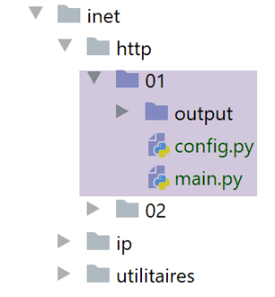
O script [http/01/main.py] é um cliente HTTP configurado pelo ficheiro [config.py]. O seu conteúdo é o seguinte:
- O conteúdo do ficheiro é uma lista de URLs, sendo que cada item da lista é um dicionário. Este dicionário especifica como se ligar ao site designado pela chave [site];
- linhas 4–10: o significado das chaves em cada dicionário;
O script [http/01/main.py] é o seguinte:
1 2 3 4 5 6 7 8 9 10 11 12 13 14 15 16 17 18 19 20 21 22 23 24 25 26 27 28 29 30 31 32 33 34 35 36 37 38 39 40 41 42 43 44 45 46 47 48 49 50 51 52 53 54 55 56 57 58 59 60 61 62 63 64 65 66 67 68 69 70 71 72 73 74 75 76 77 78 79 80 81 82 83 84 85 86 87 88 89 90 91 92 93 94 95 96 97 98 99 100 101 102 103 104 105 106 107 108 109 110 111 112 113 114 115 116 117 118 119 120 121 122 123 124 | |
Comentários do código:
- linhas 108-109: o dicionário [config] do módulo [config.py] é recuperado;
- linhas 111-122: este dicionário é utilizado;
- linhas 118 e 117: a função [get_url(url)] solicita um documento do site url[site] e armazena-o no ficheiro de texto url[site].HTML. Por predefinição, as trocas cliente/servidor são registadas na consola (tracking=True);
- Tudo é feito dentro de um bloco [try / finally] (linhas 14–96). Não há cláusula [except]. As exceções são propagadas para o código de chamada, que as captura e as exibe (linhas 119–120);
- Linhas 16–17: Abertura de uma ligação ao servidor web. A função [socket.create_connection] aceita três parâmetros:
- [param1]: é o nome do computador na Internet ao qual pretende aceder;
- [param2]: é o número da porta do serviço ao qual pretende ligar-se;
- [param3]: [socket.create_connection] retorna um socket, e [param3], se presente, especifica o tempo de espera para o socket criado. O tempo de espera é o período máximo durante o qual o socket aguarda uma resposta da máquina remota;
- linhas 27-28: criação do ficheiro [site.html] no qual o documento HTML recebido será armazenado;
- linhas 34-43: o primeiro comando do cliente deve ser o comando [GET URL HTTP/1.1];
- linha 43: a função [sock.send] permite que o cliente envie dados para o servidor. Aqui, a cadeia de texto enviada tem o seguinte significado: «Quero (GET) a página [URL] do site ao qual estou ligado. Estou a utilizar a versão 1.1 do HTTP»;
- Linha 43: A instrução [sock.send(bytearray(command, 'utf-8'))] envia uma matriz de bytes. Esta matriz é obtida através da conversão da cadeia de caracteres [command] numa sequência de bytes codificados em UTF-8;
- linhas 44–52: são enviadas as outras linhas do protocolo HTTP [Host, User-Agent, Accept, Accept-Language…]. A sua ordem não importa;
- linhas 53–55: o cabeçalho HTTP [Connection: close] é enviado para instruir o servidor a fechar a ligação assim que tiver enviado o documento solicitado. Por predefinição, o servidor não faz isto. Por isso, deve ser explicitamente solicitado. A vantagem é que este encerramento será detetado no lado do cliente, e é assim que o cliente saberá que recebeu o documento solicitado na íntegra;
- linhas 56–57: é enviada uma linha vazia ao servidor para indicar que o cliente terminou de enviar os seus cabeçalhos HTTP e está agora à espera do documento solicitado;
- linhas 68–86: O servidor enviará primeiro uma série de cabeçalhos HTTP que fornecem vários detalhes sobre o documento solicitado. Estes cabeçalhos terminam com uma linha vazia;
- linhas 69–73: Para ler a resposta do servidor linha a linha, usamos o método [sock.makefile(encoding=encoding)]. O parâmetro opcional [encoding] especifica a codificação de texto esperada. Após esta operação, o fluxo de linhas enviadas pelo servidor pode ser lido como um ficheiro de texto padrão;
- linha 78: lemos uma linha enviada pelo servidor utilizando o método [readline]. Removemos os espaços em branco iniciais e finais (espaços, caracteres de nova linha);
- linhas 81–83: se a linha não estiver vazia e o rastreamento tiver sido solicitado, a linha recebida é exibida na consola;
- linhas 84–86: se a linha vazia que marca o fim dos cabeçalhos HTTP enviados pelo servidor tiver sido recuperada, o loop na linha 76 é encerrado;
- linhas 90–95: as linhas de texto da resposta do servidor podem ser lidas linha a linha utilizando um ciclo while e guardadas no ficheiro de texto [html]. Quando o servidor web tiver enviado toda a página solicitada, encerra a sua ligação com o cliente. No lado do cliente, isto será detetado como um fim de ficheiro, e sairemos do ciclo nas linhas 90–95;
- Linhas 96–102: Independentemente de ocorrer ou não um erro, todos os recursos utilizados pelo código são libertados;
Resultados:
A consola apresenta os seguintes registos:
C:\Data\st-2020\dev\python\cours-2020\python3-flask-2020\venv\Scripts\python.exe C:/Data/st-2020/dev/python/cours-2020/python3-flask-2020/inet/http/01/main.py
-------------------------
localhost
-------------------------
Client : début de la communication avec le serveur [localhost]
--> GET / HTTP/1.1
--> Host: localhost:80
--> User-Agent: client Python
--> Accept: text/HTML
--> Accept-Language: fr
Réponse du serveur [localhost]
<-- HTTP/1.1 200 OK
<-- Date: Sun, 05 Jul 2020 16:27:46 GMT
<-- Server: Apache/2.4.35 (Win64) OpenSSL/1.1.1b PHP/7.2.19
<-- X-Powered-By: PHP/7.2.19
<-- Content-Length: 1776
<-- Connection: close
<-- Content-Type: text/html; charset=UTF-8
-------------------------
sergetahe.com
-------------------------
Client : début de la communication avec le serveur [sergetahe.com]
--> GET / HTTP/1.1
--> Host: sergetahe.com:80
--> User-Agent: client Python
--> Accept: text/HTML
--> Accept-Language: fr
Réponse du serveur [sergetahe.com]
<-- HTTP/1.1 302 Found
<-- Date: Sun, 05 Jul 2020 16:27:45 GMT
<-- Content-Type: text/html; charset=UTF-8
<-- Transfer-Encoding: chunked
<-- Connection: close
<-- Server: Apache
<-- X-Powered-By: PHP/7.3
<-- Location: http://sergetahe.com:80/cours-tutoriels-de-programmation
<-- Set-Cookie: SERVERID68971=2620178|XwH/h|XwH/h; path=/
<-- X-IPLB-Instance: 17106
-------------------------
tahe.developpez.com
-------------------------
Client : début de la communication avec le serveur [tahe.developpez.com]
--> GET / HTTP/1.1
--> Host: tahe.developpez.com:443
--> User-Agent: client Python
--> Accept: text/HTML
--> Accept-Language: fr
Réponse du serveur [tahe.developpez.com]
<-- HTTP/1.1 400 Bad Request
<-- Date: Sun, 05 Jul 2020 16:27:45 GMT
<-- Server: Apache/2.4.38 (Debian)
<-- Content-Length: 453
<-- Connection: close
<-- Content-Type: text/html; charset=iso-8859-1
-------------------------
www.sergetahe.com
-------------------------
Client : début de la communication avec le serveur [www.sergetahe.com]
--> GET /cours-tutoriels-de-programmation/ HTTP/1.1
--> Host: sergetahe.com:80
--> User-Agent: client Python
--> Accept: text/HTML
--> Accept-Language: fr
Réponse du serveur [www.sergetahe.com]
<-- HTTP/1.1 301 Moved Permanently
<-- Date: Sun, 05 Jul 2020 16:27:45 GMT
<-- Content-Type: text/html; charset=iso-8859-1
<-- Content-Length: 263
<-- Connection: close
<-- Server: Apache
<-- Location: https://sergetahe.com/cours-tutoriels-de-programmation/
<-- Set-Cookie: SERVERID68971=2620178|XwH/h|XwH/h; path=/
<-- X-IPLB-Instance: 17095
Terminé...
Process finished with exit code 0
Comentários
- linha 12: o URL [http://localhost/] foi encontrado (código 200);
- linha 29: o URL [http://sergetahe.com/] não foi encontrado (código 302). O código 302 significa que a página solicitada mudou de URL. O novo URL é indicado pelo cabeçalho HTTP [Location] na linha 36;
- linha 49: o pedido enviado ao servidor [http://tahe.developpez.com] é inválido (código de estado 400);
- linha 65: o URL [http://www.sergetahe.com/] não foi encontrado (código 301). O código 301 significa que a página solicitada alterou permanentemente o seu URL. O novo URL é indicado pelo cabeçalho HTTP [Location] na linha 71;
Em geral, os códigos 3xx, 4xx e 5xx de um servidor HTTP são códigos de erro.
A execução produziu os seguintes ficheiros:
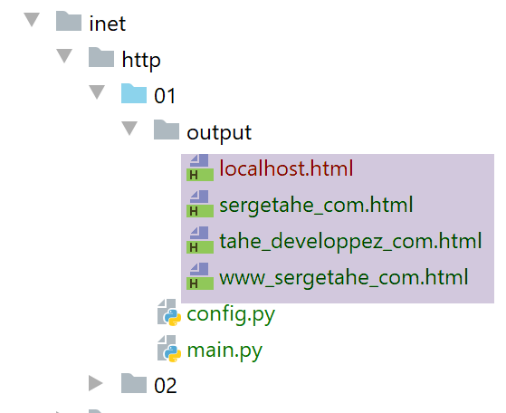
O ficheiro recebido [output/localhost.HTML] é o seguinte:
<!DOCTYPE html>
<html>
<head>
<title>Laragon</title>
<link href="https://fonts.googleapis.com/css?family=Karla:400" rel="stylesheet" type="text/css">
<style>
html, body {
height: 100%;
}
body {
margin: 0;
padding: 0;
width: 100%;
display: table;
font-weight: 100;
font-family: 'Karla';
}
.container {
text-align: center;
display: table-cell;
vertical-align: middle;
}
.content {
text-align: center;
display: inline-block;
}
.title {
font-size: 96px;
}
.opt {
margin-top: 30px;
}
.opt a {
text-decoration: none;
font-size: 150%;
}
a:hover {
color: red;
}
</style>
</head>
<body>
<div class="container">
<div class="content">
<div class="title" title="Laragon">Laragon</div>
<div class="info"><br />
Apache/2.4.35 (Win64) OpenSSL/1.1.1b PHP/7.2.19<br />
PHP version: 7.2.19 <span><a title="phpinfo()" href="/?q=info">info</a></span><br />
Document Root: C:/MyPrograms/laragon/www<br />
</div>
<div class="opt">
<div><a title="Getting Started" href="https://laragon.org/docs">Getting Started</a></div>
</div>
</div>
</div>
</body>
</html>
De facto, obtivemos o mesmo documento que no navegador Firefox.
O documento recebido [output/sergetahe_com.html] é o seguinte:

A maioria dos servidores HTTP envia as suas respostas aos pedidos em blocos. Cada bloco enviado é precedido por uma linha que indica o número de bytes no bloco seguinte. Isto permite ao cliente ler exatamente esse número de bytes para receber o bloco. Aqui, o 0 indica que o bloco seguinte tem zero bytes. Recorde-se que o servidor tinha indicado que o documento [http://sergetahe.com/] tinha alterado o seu URL. Por conseguinte, não enviou um documento.
O documento [output/tahe_developpez_com.html] é o seguinte:
<!DOCTYPE HTML PUBLIC "-//IETF//DTD HTML 2.0//EN">
<html><head>
<title>400 Bad Request</title>
</head><body>
<h1>Bad Request</h1>
<p>Your browser sent a request that this server could not understand.<br />
Reason: You're speaking plain HTTP to an SSL-enabled server port.<br />
Instead use the HTTPS scheme to access this URL, please.<br />
</p>
<hr>
<address>Apache/2.4.38 (Debian) Server at 2eurocents.developpez.com Port 80</address>
</body></html>
- Linhas 1–12: O servidor enviou um documento HTML apesar de o pedido estar incorreto (linha 49 dos resultados). O documento HTML permite ao servidor especificar a causa do erro. Isto é indicado nas linhas 6 e 7:
- linha 7: o nosso cliente utilizou o protocolo HTTP;
- linha 8: o servidor utiliza o protocolo HTTPS (S = seguro) e não aceita o protocolo HTTP;
O documento [output/www_sergetahe_com.html] é o seguinte:
<!DOCTYPE HTML PUBLIC "-//IETF//DTD HTML 2.0//EN">
<html><head>
<title>301 Moved Permanently</title>
</head><body>
<h1>Moved Permanently</h1>
<p>The document has moved <a href="https://sergetahe.com/cours-tutoriels-de-programmation/">here</a>.</p>
</body></html>
Também aqui ocorreu um erro (linha 3). No entanto, o servidor encarrega-se de enviar um documento HTML que detalha o erro (linhas 1–7).
21.4.4. Exemplo 4
Os exemplos anteriores mostraram-nos que o nosso cliente HTTP era insuficiente. Vamos agora apresentar uma ferramenta chamada [curl] que nos permite recuperar documentos web enquanto lida com os desafios mencionados: protocolo HTTPS, documentos enviados em pedaços, redirecionamentos… A ferramenta [curl] foi instalada com o Laragon:

Vamos abrir um terminal do PyCharm [1]:
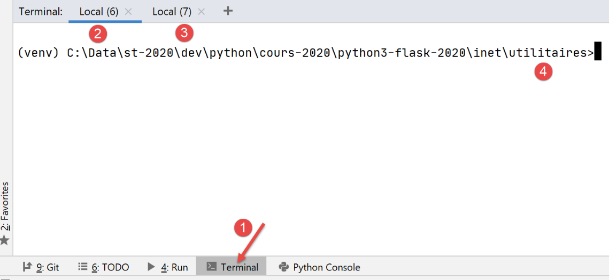
- em [1], acesso aos terminais do PyCharm;
- em [2-3], os terminais já ativos;
- em [4], o diretório em que se encontra atualmente. Não importa qual deles utiliza;
No terminal, digite o seguinte comando:
(venv) C:\Data\st-2020\dev\python\cours-2020\python3-flask-2020\inet\utilitaires>curl --help
Usage: curl [options...] <url>
--abstract-unix-socket <path> Connect via abstract Unix domain socket
--anyauth Pick any authentication method
-a, --append Append to target file when uploading
--basic Use HTTP Basic Authentication
--cacert <CA certificate> CA certificate to verify peer against
…
O facto de o comando [curl –help] ter produzido resultados demonstra que o comando [curl] se encontra no PATH do terminal. No Windows, o PATH é o conjunto de pastas pesquisadas quando o utilizador digita um comando executável, neste caso [curl]. O valor do PATH pode ser determinado da seguinte forma:
(venv) C:\Data\st-2020\dev\python\cours-2020\python3-flask-2020\inet\utilitaires>echo %PATH%
C:\Data\st-2020\dev\python\cours-2020\python3-flask-2020\venv\Scripts;C:\Program Files (x86)\Common Files\Oracle\Java\javapath;C:\Program Files\Python38\Scripts\;C:\Program Files\Python38\;C:\windows\system32;C:\windows;C:\windows\System32\Wbem;C:\windows\System32\WindowsPowerShell\v1.0\;C:\windows\System32\OpenSSH\;C:\Program Files\Git\cmd;C:\Users\serge\AppData\Local\Microsoft\WindowsApps;;C:\Program Files\JetBrains\PyCharm Community Edition 2020.1.2\bin;
Linha 2: as pastas PATH separadas por ponto e vírgula. Nenhuma pasta relacionada com o Laragon aparece nesta lista. Após uma investigação mais aprofundada, descobrimos que existe um [curl] na pasta [c:\windows\system32]. É este que respondeu anteriormente.
Se pretender utilizar a ferramenta [curl] incluída no Laragon, pode proceder da seguinte forma:

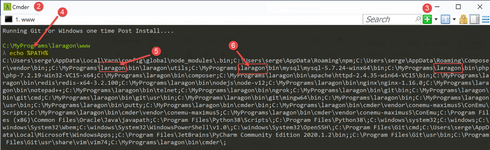
- em [2], o terminal do Laragon;
- em [3], este botão permite-lhe criar novos terminais, cada um dos quais se abre numa separador na janela acima;
- em [4], definimos o PATH para o terminal do Laragon;
- obtém-se algo muito diferente do que se obtinha num terminal do PyCharm. Este PATH contém muitas pastas criadas durante a instalação do Laragon. A pasta que contém a ferramenta [curl] é uma delas:

Depois, utilize o terminal da sua preferência. Lembre-se apenas de que, quando quiser utilizar uma ferramenta fornecida pelo Laragon, o terminal do Laragon é a opção preferencial.
O comando [curl --help] exibe todas as opções de configuração do [curl]. Existem dezenas delas. Vamos utilizar muito poucas delas. Para solicitar um URL, basta digitar o comando [curl URL]. Este comando irá exibir o documento solicitado na consola. Se também quiser ver as trocas HTTP entre o cliente e o servidor, digite [curl --verbose URL]. Por fim, para guardar o documento HTML solicitado num ficheiro, digite [curl --verbose --output nome_do_ficheiro URL].
Para evitar sobrecarregar o sistema de ficheiros da nossa máquina, vamos mudar para um local diferente (estou a usar um terminal Laragon aqui):
λ cd \Temp\
C:\Temp
λ mkdir curl
C:\Temp
λ cd curl\
C:\Temp\curl
λ dir
Le volume dans le lecteur C s’appelle Local Disk
Le numéro de série du volume est B84C-D958
Répertoire de C:\Temp\curl
05/07/2020 19:31 <DIR> .
05/07/2020 19:31 <DIR> ..
0 fichier(s) 0 octets
2 Rép(s) 892 388 098 048 octets libres
- na linha 3, navegamos até à pasta [c:\temp]. Se esta pasta não existir, pode criá-la ou escolher outra;
- na linha 6, crie uma pasta chamada [curl];
- na linha 9, navegamos até ela;
- na linha 12, listamos o seu conteúdo. Está vazio (linha 20);
Certifique-se de que o servidor Apache do Laragon está em execução e utilize [curl] para solicitar o URL [http://localhost/] com o comando [curl –verbose –output localhost.html http://localhost/]. Obterá os seguintes resultados:
λ curl --verbose --output localhost.html http://localhost/
% Total % Received % Xferd Average Speed Time Time Time Current
Dload Upload Total Spent Left Speed
0 0 0 0 0 0 0 0 --:--:-- --:--:-- --:--:-- 0* Trying ::1...
* TCP_NODELAY set
* Trying 127.0.0.1...
* TCP_NODELAY set
0 0 0 0 0 0 0 0 --:--:-- 0:00:01 --:--:-- 0* Connected to localhost (::1) port 80 (#0)
0 0 0 0 0 0 0 0 --:--:-- 0:00:01 --:--:-- 0> GET / HTTP/1.1
> Host: localhost
> User-Agent: curl/7.63.0
> Accept: */*
>
< HTTP/1.1 200 OK
< Date: Sun, 05 Jul 2020 17:35:43 GMT
< Server: Apache/2.4.35 (Win64) OpenSSL/1.1.1b PHP/7.2.19
< X-Powered-By: PHP/7.2.19
< Content-Length: 1776
< Content-Type: text/html; charset=UTF-8
<
{ [1776 bytes data]
100 1776 100 1776 0 0 1062 0 0:00:01 0:00:01 --:--:-- 1062
* Connection #0 to host localhost left intact
- linhas 10–13: linhas enviadas pelo [curl] para o servidor [localhost]. O protocolo HTTP é reconhecido;
- linhas 14–20: linhas enviadas em resposta pelo servidor;
- linha 14: indica que o documento solicitado foi recebido com sucesso;
O ficheiro [localhost.html] contém o documento solicitado. Pode verificar isto abrindo o ficheiro num editor de texto.
Agora vamos solicitar a URL [https://tahe.developpez.com:443/]. Para aceder a esta URL, o cliente HTTP deve suportar HTTPS. É o que acontece com o cliente [curl].
A saída da consola é a seguinte:
C:\Temp\curl
λ curl --verbose --output tahe.developpez.com.html https://tahe.developpez.com:443/
% Total % Received % Xferd Average Speed Time Time Time Current
Dload Upload Total Spent Left Speed
0 0 0 0 0 0 0 0 --:--:-- --:--:-- --:--:-- 0* Trying 87.98.130.52...
* TCP_NODELAY set
0 0 0 0 0 0 0 0 --:--:-- --:--:-- --:--:-- 0* Connected to tahe.developpez.com (87.98.130.52) port 443 (#0)
* ALPN, offering h2
* ALPN, offering http/1.1
* successfully set certificate verify locations:
* CAfile: C:\MyPrograms\laragon\bin\laragon\utils\curl-ca-bundle.crt
CApath: none
} [5 bytes data]
* TLSv1.3 (OUT), TLS handshake, Client hello (1):
} [512 bytes data]
* TLSv1.3 (IN), TLS handshake, Server hello (2):
{ [122 bytes data]
* TLSv1.3 (IN), TLS handshake, Encrypted Extensions (8):
{ [25 bytes data]
* TLSv1.3 (IN), TLS handshake, Certificate (11):
{ [2563 bytes data]
* TLSv1.3 (IN), TLS handshake, CERT verify (15):
{ [264 bytes data]
* TLSv1.3 (IN), TLS handshake, Finished (20):
{ [52 bytes data]
* TLSv1.3 (OUT), TLS change cipher, Change cipher spec (1):
} [1 bytes data]
* TLSv1.3 (OUT), TLS handshake, Finished (20):
} [52 bytes data]
* SSL connection using TLSv1.3 / TLS_AES_256_GCM_SHA384
* ALPN, server accepted to use http/1.1
* Server certificate:
* subject: CN=*.developpez.com
* start date: Jul 1 15:38:30 2020 GMT
* expire date: Sep 29 15:38:30 2020 GMT
* subjectAltName: host "tahe.developpez.com" matched cert's "*.developpez.com"
* issuer: C=US; O=Let's Encrypt; CN=Let's Encrypt Authority X3
* SSL certificate verify ok.
} [5 bytes data]
> GET / HTTP/1.1
> Host: tahe.developpez.com
> User-Agent: curl/7.63.0
> Accept: */*
>
{ [5 bytes data]
* TLSv1.3 (IN), TLS handshake, Newsession Ticket (4):
{ [281 bytes data]
* TLSv1.3 (IN), TLS handshake, Newsession Ticket (4):
{ [297 bytes data]
* old SSL session ID is stale, removing
{ [5 bytes data]
< HTTP/1.1 200 OK
< Date: Sun, 05 Jul 2020 17:39:53 GMT
< Server: Apache/2.4.38 (Debian)
< X-Powered-By: PHP/5.3.29
< Vary: Accept-Encoding
< Transfer-Encoding: chunked
< Content-Type: text/html
<
{ [6 bytes data]
100 99k 0 99k 0 0 79343 0 --:--:-- 0:00:01 --:--:-- 79343
* Connection #0 to host tahe.developpez.com left intact
- linhas 10-39: trocas cliente/servidor para proteger a ligação: esta será encriptada;
- linhas 41-44: os cabeçalhos HTTP enviados pelo cliente [curl] ao servidor;
- linha 52: o documento solicitado foi encontrado;
- linha 57: o documento é enviado em partes;
O [curl] lida corretamente tanto com o protocolo seguro HTTPS como com o facto de o documento ser enviado em partes. O documento enviado pode ser encontrado aqui, no ficheiro [tahe.developpez.com.html].
Agora, vamos solicitar a URL [http://sergetahe.com/cours-tutoriels-de-programmation]. Vimos que, para esta URL, havia um redirecionamento para a URL [http://sergetahe.com/cours-tutoriels-de-programmation/] (com um / no final).
A saída da consola é a seguinte:
C:\Temp\curl
λ curl --verbose --output sergetahe.com.html --location http://sergetahe.com/cours-tutoriels-de-programmation
% Total % Received % Xferd Average Speed Time Time Time Current
Dload Upload Total Spent Left Speed
0 0 0 0 0 0 0 0 --:--:-- --:--:-- --:--:-- 0* Trying 87.98.154.146...
* TCP_NODELAY set
* Connected to sergetahe.com (87.98.154.146) port 80 (#0)
> GET /cours-tutoriels-de-programmation HTTP/1.1
> Host: sergetahe.com
> User-Agent: curl/7.63.0
> Accept: */*
>
< HTTP/1.1 301 Moved Permanently
< Date: Sun, 05 Jul 2020 17:44:17 GMT
< Content-Type: text/html; charset=iso-8859-1
< Content-Length: 262
< Server: Apache
< Location: http://sergetahe.com/cours-tutoriels-de-programmation/
< Set-Cookie: SERVERID68971=2620178|XwIRd|XwIRd; path=/
< X-IPLB-Instance: 17095
<
* Ignoring the response-body
{ [262 bytes data]
100 262 100 262 0 0 1858 0 --:--:-- --:--:-- --:--:-- 1858
* Connection #0 to host sergetahe.com left intact
* Issue another request to this URL: 'http://sergetahe.com/cours-tutoriels-de-programmation/'
* Found bundle for host sergetahe.com: 0x14385f8 [can pipeline]
* Could pipeline, but not asked to!
* Re-using existing connection! (#0) with host sergetahe.com
* Connected to sergetahe.com (87.98.154.146) port 80 (#0)
> GET /cours-tutoriels-de-programmation/ HTTP/1.1
> Host: sergetahe.com
> User-Agent: curl/7.63.0
> Accept: */*
>
< HTTP/1.1 301 Moved Permanently
< Date: Sun, 05 Jul 2020 17:44:17 GMT
< Content-Type: text/html; charset=iso-8859-1
< Content-Length: 263
< Server: Apache
< Location: https://sergetahe.com/cours-tutoriels-de-programmation/
< Set-Cookie: SERVERID68971=2620178|XwIRd|XwIRd; path=/
< X-IPLB-Instance: 17095
<
* Ignoring the response-body
{ [263 bytes data]
100 263 100 263 0 0 764 0 --:--:-- --:--:-- --:--:-- 764
* Connection #0 to host sergetahe.com left intact
* Issue another request to this URL: 'https://sergetahe.com/cours-tutoriels-de-programmation/'
* Trying 87.98.154.146...
* TCP_NODELAY set
* Connected to sergetahe.com (87.98.154.146) port 443 (#1)
* ALPN, offering h2
* ALPN, offering http/1.1
* successfully set certificate verify locations:
* CAfile: C:\MyPrograms\laragon\bin\laragon\utils\curl-ca-bundle.crt
CApath: none
} [5 bytes data]
* TLSv1.3 (OUT), TLS handshake, Client hello (1):
} [512 bytes data]
* TLSv1.3 (IN), TLS handshake, Server hello (2):
{ [102 bytes data]
* TLSv1.2 (IN), TLS handshake, Certificate (11):
{ [2572 bytes data]
* TLSv1.2 (IN), TLS handshake, Server key exchange (12):
{ [333 bytes data]
* TLSv1.2 (IN), TLS handshake, Server finished (14):
{ [4 bytes data]
* TLSv1.2 (OUT), TLS handshake, Client key exchange (16):
} [70 bytes data]
* TLSv1.2 (OUT), TLS change cipher, Change cipher spec (1):
} [1 bytes data]
* TLSv1.2 (OUT), TLS handshake, Finished (20):
} [16 bytes data]
0 0 0 0 0 0 0 0 --:--:-- --:--:-- --:--:-- 0* TLSv1.2 (IN), TLS handshake, Finished (20):
{ [16 bytes data]
* SSL connection using TLSv1.2 / ECDHE-RSA-AES128-GCM-SHA256
* ALPN, server accepted to use h2
* Server certificate:
* subject: CN=sergetahe.com
* start date: May 10 01:41:15 2020 GMT
* expire date: Aug 8 01:41:15 2020 GMT
* subjectAltName: host "sergetahe.com" matched cert's "sergetahe.com"
* issuer: C=US; O=Let's Encrypt; CN=Let's Encrypt Authority X3
* SSL certificate verify ok.
* Using HTTP2, server supports multi-use
* Connection state changed (HTTP/2 confirmed)
* Copying HTTP/2 data in stream buffer to connection buffer after upgrade: len=0
} [5 bytes data]
* Using Stream ID: 1 (easy handle 0x2bee870)
} [5 bytes data]
> GET /cours-tutoriels-de-programmation/ HTTP/2
> Host: sergetahe.com
> User-Agent: curl/7.63.0
> Accept: */*
>
{ [5 bytes data]
* Connection state changed (MAX_CONCURRENT_STREAMS == 128)!
} [5 bytes data]
0 0 0 0 0 0 0 0 --:--:-- 0:00:01 --:--:-- 0< HTTP/2 200
< date: Sun, 05 Jul 2020 17:44:19 GMT
< content-type: text/html; charset=UTF-8
< server: Apache
< x-powered-by: PHP/7.3
< link: <https://sergetahe.com/cours-tutoriels-de-programmation/wp-json/>; rel="https://api.w.org/"
< link: <https://sergetahe.com/cours-tutoriels-de-programmation/>; rel=shortlink
< vary: Accept-Encoding
< x-iplb-instance: 17080
< set-cookie: SERVERID68971=2620178|XwIRd|XwIRd; path=/
<
{ [5 bytes data]
100 49634 0 49634 0 0 26040 0 --:--:-- 0:00:01 --:--:-- 37830
* Connection #1 to host sergetahe.com left intact
- linha 2: a opção [--location] é utilizada para indicar que pretendemos seguir os redirecionamentos enviados pelo servidor;
- linha 13: o servidor indica que o documento solicitado alterou o seu URL;
- linha 18: indica a nova URL do documento solicitado;
- linha 31: o [curl] envia um novo pedido para a nova URL;
- linha 36: o servidor responde novamente que o URL mudou;
- linha 41: a nova URL é exatamente a mesma que foi redirecionada, com uma pequena diferença: o protocolo mudou. Passou a ser HTTPS (linha 41), enquanto anteriormente era HTTP (linha 31);
- Linha 49: É enviada uma nova solicitação para a nova URL. Esta solicitação é encriptada. Consequentemente, ocorre um processo de negociação de segurança (linhas 53–91);
- Linha 92: A nova URL é solicitada, desta vez utilizando o protocolo HTTP/2;
- Linha 100: O documento foi encontrado;
O documento solicitado será encontrado no ficheiro [sergetahe.com.html].
C:\Temp\curl
λ dir
Le volume dans le lecteur C s’appelle Local Disk
Le numéro de série du volume est B84C-D958
Répertoire de C:\Temp\curl
05/07/2020 19:44 <DIR> .
05/07/2020 19:44 <DIR> ..
05/07/2020 19:35 1 776 localhost.html
05/07/2020 19:44 49 634 sergetahe.com.html
05/07/2020 19:39 101 639 tahe.developpez.com.html
3 fichier(s) 153 049 octets
2 Rép(s) 892 385 628 160 octets libres
21.4.5. Exemplo 5
O Python tem um módulo chamado [pyccurl] que permite utilizar as funcionalidades da ferramenta [curl] num programa Python. Instalamos este módulo:
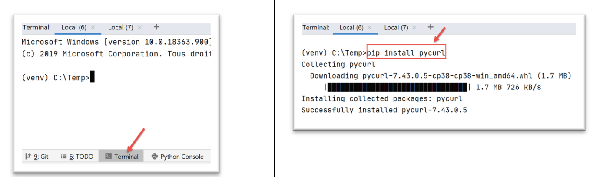
Vamos escrever um novo script [http/02/main.py]:

O ficheiro [http/02/config] é o seguinte:
O ficheiro contém uma lista de dicionários, cada um dos quais com a seguinte estrutura:
- site: o nome de um servidor web;
- encoding: o tipo de codificação do documento esperado;
- timeout: tempo máximo de espera pela resposta do servidor, expresso em milissegundos. Após este tempo, o cliente irá desligar-se;
- url: URL do documento solicitado;
O código do script [http/02/main.py] é o seguinte:
Comentários
- linha 5: importamos o módulo [pycurl];
- linha 3: importamos a classe [BytesIO], que nos permitirá armazenar os dados recebidos do servidor num fluxo binário;
- linhas 70–72: recuperamos a configuração da aplicação;
- linhas 75–85: percorremos a lista de URLs encontradas na configuração;
- linha 81: para cada URL, chamamos a função [get_url], que irá descarregar a URL url['target'] com um tempo limite de url['timeout'];
- linha 9: a função [get_url] recebe a configuração da URL a ser consultada;
- linhas 16–19: a configuração da URL é recuperada em variáveis separadas;
- linhas 26, 61: todas as operações são realizadas dentro de um bloco try/finally. As exceções não são capturadas aqui; são passadas para o código de chamada, que as trata;
- linha 28: é preparada uma sessão [curl]. [pycurl.Curl()] devolve um recurso [curl] que irá realizar a transação com um servidor;
- linha 30: instanciamento do fluxo binário que armazenará os dados recebidos;
- linhas 32–48: o dicionário [options] configura a ligação [curl] ao servidor. As suas funções estão indicadas nos comentários;
- linhas 49–51: as opções de ligação são passadas para o recurso [curl];
- linha 53: liga-se ao URL solicitado com as opções definidas. Devido à opção [curl.WRITEDATA: stream] (linha 36), a função [curl.perform()] irá armazenar os dados recebidos em [stream];
- linhas 54–60: é criado o ficheiro HTML que irá armazenar o documento HTML recebido;
- linha 60: o fluxo binário [flux.getvalue()] será armazenado como uma string no ficheiro HTML. A codificação desta string é especificada no método [decode(encoding)]. Por isso, é necessário conhecer a codificação do documento enviado pelo servidor. Se cometer um erro, a descodificação do fluxo binário falhará. A codificação é especificada no ficheiro de configuração da URL (linha 12, por exemplo). Poderíamos ter tratado esta informação dinamicamente, uma vez que o servidor a envia nos seus cabeçalhos HTTP. Isso teria sido preferível. Para manter o código simples, não o fizemos. Para determinar o tipo de codificação do documento, basta solicitar o URL desejado utilizando um navegador e examinar os cabeçalhos HTTP enviados pelo navegador no modo de depuração (F12), ou o próprio documento, uma vez que este também especifica a codificação:


- linhas 61–66: os recursos alocados são libertados;
Ao executar o script [main.py], é apresentada a seguinte saída na consola:
C:\Data\st-2020\dev\python\cours-2020\python3-flask-2020\venv\Scripts\python.exe C:/Data/st-2020/dev/python/cours-2020/python3-flask-2020/inet/http/02/main.py
-------------------------
sergetahe.com
-------------------------
Client : début de la communication avec le serveur [sergetahe.com]
* Trying 87.98.154.146:80...
* TCP_NODELAY set
* Connected to sergetahe.com (87.98.154.146) port 80 (#0)
> GET / HTTP/1.1
Host: sergetahe.com
User-Agent: PycURL/7.43.0.5 libcurl/7.68.0 OpenSSL/1.1.1d zlib/1.2.11 c-ares/1.15.0 WinIDN libssh2/1.9.0 nghttp2/1.40.0
Accept: */*
* Mark bundle as not supporting multiuse
< HTTP/1.1 302 Found
< Date: Mon, 06 Jul 2020 06:45:52 GMT
< Content-Type: text/html; charset=UTF-8
< Transfer-Encoding: chunked
< Server: Apache
< X-Powered-By: PHP/7.3
< Location: http://sergetahe.com/cours-tutoriels-de-programmation
< Set-Cookie: SERVERID68971=26218|XwLIo|XwLIo; path=/
< X-IPLB-Instance: 17102
<
* Ignoring the response-body
* Connection #0 to host sergetahe.com left intact
* Issue another request to this URL: 'http://sergetahe.com/cours-tutoriels-de-programmation'
* Found bundle for host sergetahe.com: 0x25eacafb5d0 [serially]
* Can not multiplex, even if we wanted to!
* Re-using existing connection! (#0) with host sergetahe.com
* Connected to sergetahe.com (87.98.154.146) port 80 (#0)
> GET /cours-tutoriels-de-programmation HTTP/1.1
Host: sergetahe.com
User-Agent: PycURL/7.43.0.5 libcurl/7.68.0 OpenSSL/1.1.1d zlib/1.2.11 c-ares/1.15.0 WinIDN libssh2/1.9.0 nghttp2/1.40.0
Accept: */*
* Mark bundle as not supporting multiuse
< HTTP/1.1 301 Moved Permanently
< Date: Mon, 06 Jul 2020 06:45:52 GMT
< Content-Type: text/html; charset=iso-8859-1
< Content-Length: 262
< Server: Apache
< Location: http://sergetahe.com/cours-tutoriels-de-programmation/
< Set-Cookie: SERVERID68971=26218|XwLIo|XwLIo; path=/
< X-IPLB-Instance: 17102
<
* Ignoring the response-body
* Connection #0 to host sergetahe.com left intact
* Issue another request to this URL: 'http://sergetahe.com/cours-tutoriels-de-programmation/'
* Found bundle for host sergetahe.com: 0x25eacafb5d0 [serially]
* Can not multiplex, even if we wanted to!
* Re-using existing connection! (#0) with host sergetahe.com
* Connected to sergetahe.com (87.98.154.146) port 80 (#0)
> GET /cours-tutoriels-de-programmation/ HTTP/1.1
Host: sergetahe.com
User-Agent: PycURL/7.43.0.5 libcurl/7.68.0 OpenSSL/1.1.1d zlib/1.2.11 c-ares/1.15.0 WinIDN libssh2/1.9.0 nghttp2/1.40.0
Accept: */*
* Mark bundle as not supporting multiuse
< HTTP/1.1 301 Moved Permanently
< Date: Mon, 06 Jul 2020 06:45:52 GMT
< Content-Type: text/html; charset=iso-8859-1
< Content-Length: 263
< Server: Apache
< Location: https://sergetahe.com/cours-tutoriels-de-programmation/
< Set-Cookie: SERVERID68971=26218|XwLIo|XwLIo; path=/
< X-IPLB-Instance: 17102
<
* Ignoring the response-body
* Connection #0 to host sergetahe.com left intact
* Issue another request to this URL: 'https://sergetahe.com/cours-tutoriels-de-programmation/'
* Trying 87.98.154.146:443...
* TCP_NODELAY set
* ….
* Using Stream ID: 1 (easy handle 0x25eaec77010)
> GET /cours-tutoriels-de-programmation/ HTTP/2
Host: sergetahe.com
user-agent: PycURL/7.43.0.5 libcurl/7.68.0 OpenSSL/1.1.1d zlib/1.2.11 c-ares/1.15.0 WinIDN libssh2/1.9.0 nghttp2/1.40.0
accept: */*
* Connection state changed (MAX_CONCURRENT_STREAMS == 128)!
< HTTP/2 200
< date: Mon, 06 Jul 2020 06:45:53 GMT
< content-type: text/html; charset=UTF-8
< server: Apache
< x-powered-by: PHP/7.3
< link: <https://sergetahe.com/cours-tutoriels-de-programmation/wp-json/>; rel="https://api.w.org/"
< link: <https://sergetahe.com/cours-tutoriels-de-programmation/>; rel=shortlink
< vary: Accept-Encoding
< x-iplb-instance: 17080
< set-cookie: SERVERID68971=26218|XwLIp|XwLIp; path=/
<
* Connection #1 to host sergetahe.com left intact
-------------------------
tahe.developpez.com
-------------------------
Client : début de la communication avec le serveur [tahe.developpez.com]
* Trying 87.98.130.52:443...
* TCP_NODELAY set
* Connected to tahe.developpez.com (87.98.130.52) port 443 (#0)
* ALPN, offering h2
* ALPN, offering http/1.1
* SSL connection using TLSv1.3 / TLS_AES_256_GCM_SHA384
* ALPN, server accepted to use http/1.1
* Server certificate:
* subject: CN=*.developpez.com
* start date: Jul 1 15:38:30 2020 GMT
* expire date: Sep 29 15:38:30 2020 GMT
* subjectAltName: host "tahe.developpez.com" matched cert's "*.developpez.com"
* issuer: C=US; O=Let's Encrypt; CN=Let's Encrypt Authority X3
* SSL certificate verify result: unable to get local issuer certificate (20), continuing anyway.
> GET / HTTP/1.1
Host: tahe.developpez.com
User-Agent: PycURL/7.43.0.5 libcurl/7.68.0 OpenSSL/1.1.1d zlib/1.2.11 c-ares/1.15.0 WinIDN libssh2/1.9.0 nghttp2/1.40.0
Accept: */*
* old SSL session ID is stale, removing
* Mark bundle as not supporting multiuse
< HTTP/1.1 200 OK
< Date: Mon, 06 Jul 2020 06:45:53 GMT
< Server: Apache/2.4.38 (Debian)
< X-Powered-By: PHP/5.3.29
< Vary: Accept-Encoding
< Transfer-Encoding: chunked
< Content-Type: text/html
<
* Connection #0 to host tahe.developpez.com left intact
-------------------------
www.polytech-angers.fr
-------------------------
Client : début de la communication avec le serveur [www.polytech-angers.fr]
* Trying 193.49.144.41:80...
* TCP_NODELAY set
* Connected to www.polytech-angers.fr (193.49.144.41) port 80 (#0)
> GET / HTTP/1.1
Host: www.polytech-angers.fr
User-Agent: PycURL/7.43.0.5 libcurl/7.68.0 OpenSSL/1.1.1d zlib/1.2.11 c-ares/1.15.0 WinIDN libssh2/1.9.0 nghttp2/1.40.0
Accept: */*
* Mark bundle as not supporting multiuse
< HTTP/1.1 301 Moved Permanently
< Date: Mon, 06 Jul 2020 06:45:54 GMT
< Server: Apache/2.4.29 (Ubuntu)
< Location: http://www.polytech-angers.fr/fr/index.html
< Cache-Control: max-age=1
< Expires: Mon, 06 Jul 2020 06:45:55 GMT
< Content-Length: 339
< Content-Type: text/html; charset=iso-8859-1
<
* Ignoring the response-body
* Connection #0 to host www.polytech-angers.fr left intact
* Issue another request to this URL: 'http://www.polytech-angers.fr/fr/index.html'
* Found bundle for host www.polytech-angers.fr: 0x25eacafb490 [serially]
* Can not multiplex, even if we wanted to!
* Re-using existing connection! (#0) with host www.polytech-angers.fr
* Connected to www.polytech-angers.fr (193.49.144.41) port 80 (#0)
> GET /fr/index.html HTTP/1.1
Host: www.polytech-angers.fr
User-Agent: PycURL/7.43.0.5 libcurl/7.68.0 OpenSSL/1.1.1d zlib/1.2.11 c-ares/1.15.0 WinIDN libssh2/1.9.0 nghttp2/1.40.0
Accept: */*
* Mark bundle as not supporting multiuse
< HTTP/1.1 200 OK
< Date: Mon, 06 Jul 2020 06:45:54 GMT
< Server: Apache/2.4.29 (Ubuntu)
< Last-Modified: Mon, 06 Jul 2020 04:50:09 GMT
< ETag: "85be-5a9be9bfcf228"
< Accept-Ranges: bytes
< Content-Length: 34238
< Cache-Control: max-age=1
< Expires: Mon, 06 Jul 2020 06:45:55 GMT
< Vary: Accept-Encoding
< Content-Type: text/html; charset=UTF-8
< Content-Language: fr
<
* Connection #0 to host www.polytech-angers.fr left intact
-------------------------
localhost
-------------------------
Client : début de la communication avec le serveur [localhost]
* Trying ::1:80...
* TCP_NODELAY set
* Connected to localhost (::1) port 80 (#0)
> GET / HTTP/1.1
Host: localhost
User-Agent: PycURL/7.43.0.5 libcurl/7.68.0 OpenSSL/1.1.1d zlib/1.2.11 c-ares/1.15.0 WinIDN libssh2/1.9.0 nghttp2/1.40.0
Accept: */*
* Mark bundle as not supporting multiuse
< HTTP/1.1 200 OK
< Date: Mon, 06 Jul 2020 06:45:54 GMT
< Server: Apache/2.4.35 (Win64) OpenSSL/1.1.1b PHP/7.2.19
< X-Powered-By: PHP/7.2.19
< Content-Length: 1776
< Content-Type: text/html; charset=UTF-8
<
* Connection #0 to host localhost left intact
Terminé...
Process finished with exit code 0
Comentários
- em azul, os comandos HTTP enviados ao servidor;
- em verde, os dados recebidos pelo cliente em resposta;
- obtemos as mesmas trocas que com a ferramenta [curl];
- linha 9: o URL [http://sergetahe.com/] é solicitado;
- linha 15: o servidor responde que a página foi movida. Linha 21, a nova URL;
- linha 32: a URL [http://sergetahe.com/cours-tutoriels-de-programmation] é solicitada;
- linha 38: o servidor responde que a página foi movida. Linha 43, a nova URL;
- linha 54: é solicitada a URL [http://sergetahe.com/cours-tutoriels-de-programmation/];
- linha 60: o servidor responde que a página foi movida. Linha 65, o novo URL. Utiliza o protocolo seguro [HTTPS];
- Linhas 71–75: O protocolo seguro é estabelecido com o servidor;
- linha 76: o URL [https://sergetahe.com/cours-tutoriels-de-programmation/] é solicitado;
- linha 82: o documento solicitado foi encontrado;
21.4.6. Conclusão
Nesta secção, explorámos o protocolo HTTP e escrevemos um script [http/02/main.py] capaz de descarregar um URL da Web.
21.5. O SMTP (Simple Mail Transfer Protocol)
21.5.1. Introdução
Neste capítulo:
- [Servidor B] será um servidor SMTP local que iremos instalar;
- [Cliente A] será um cliente SMTP em várias formas:
- o cliente [RawTcpClient] para explorar o protocolo SMTP;
- um script Python que emula o protocolo SMTP do cliente [RawTcpClient];
- um script Python que utiliza o módulo [smtplib] para enviar todos os tipos de e-mails;
21.5.2. Criação de um endereço [Gmail]
Para realizar os nossos testes SMTP, precisaremos de um endereço de e-mail para onde enviar. Para tal, iremos criar um endereço Gmail [https://www.google.com/intl/fr/gmail/about/]:

Nota: Envie alguns e-mails para o endereço que criou. Não continue até ter a certeza de que a conta que criou consegue receber e-mails.
21.5.3. Instalação de um servidor SMTP
Para os nossos testes, iremos instalar o servidor de correio [hMailServer], que é simultaneamente um servidor SMTP para o envio de e-mails, um servidor POP3 (Post Office Protocol) para a leitura de e-mails armazenados no servidor e um servidor IMAP (Internet Message Access Protocol) que também permite a leitura de e-mails armazenados no servidor, mas vai além disso. Em particular, permite-lhe gerir o armazenamento de e-mails no servidor.
O servidor de e-mail [hMailServer] está disponível no URL [https://www.hmailserver.com/] (maio de 2019).

Durante a instalação, ser-lhe-ão solicitadas determinadas informações:
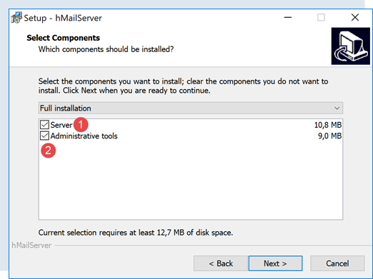
- em [1-2], selecione tanto o servidor de e-mail como as ferramentas para o administrar;
- Durante a instalação, ser-lhe-á solicitada a palavra-passe de administrador: anote-a, pois irá precisar dela;
O [hMailServer] instala-se como um serviço do Windows que inicia automaticamente quando o computador arranca. É melhor optar por um arranque manual:
- Em [3], digite [serviços] na caixa de pesquisa da barra de tarefas;

- Em [4-8], defina o serviço para o modo [Manual] (6) e, em seguida, inicie-o (7);
Depois de iniciado, o [hMailServer] deve ser configurado. O servidor foi instalado com um programa de administração [hMailServer Administrator]:

- em [2], na caixa de pesquisa da barra de estado, escreva [hmailserver];
- Em [3], inicie o administrador;
- Em [4], ligue o administrador ao servidor [hMailServer];
- em [5], introduza a palavra-passe que definiu durante a instalação do [hMailServer];
Se se esqueceu da palavra-passe, proceda da seguinte forma:
- pare o servidor [hMailServer];
- abra o ficheiro [<hmailserver>/bin/hmailserver.ini], em que <hmailserver> é o diretório de instalação do servidor:

- Em [100], remova a palavra-passe da linha [AdministratorPassword]. Isto fará com que o administrador deixe de ter uma palavra-passe. Basta premir [Enter] quando solicitado;
ValidLanguages=english,swedish
[Security]
AdministratorPassword=
[Database]
Vamos continuar a configurar o servidor:
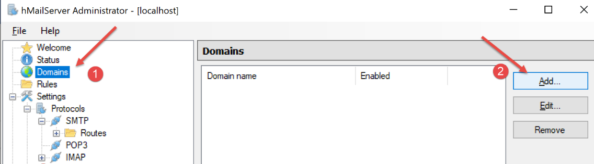
- Em [1-2], adicione um domínio (se ainda não existir nenhum);

- em [3], pode introduzir praticamente qualquer coisa para os testes que vamos realizar. Na realidade, teria de introduzir o nome de um domínio existente;

Vamos criar uma conta de utilizador:
- clique com o botão direito do rato em [Contas] (7) e, em seguida, em (8) para adicionar um novo utilizador;
- no separador [Geral] (9), definimos um utilizador chamado [guest] (10) com a palavra-passe [guest] (11). O endereço de e-mail será [guest@localhost] (10);
- Em [12], o utilizador [guest] está ativado;

- em [13-14], o utilizador é criado;

- em [27], a porta do serviço SMTP;
- Em [28], este serviço não requer autenticação;
- em [30], introduza a mensagem de boas-vindas que o servidor SMTP enviará aos seus clientes;

Fazemos o mesmo com o servidor POP3:
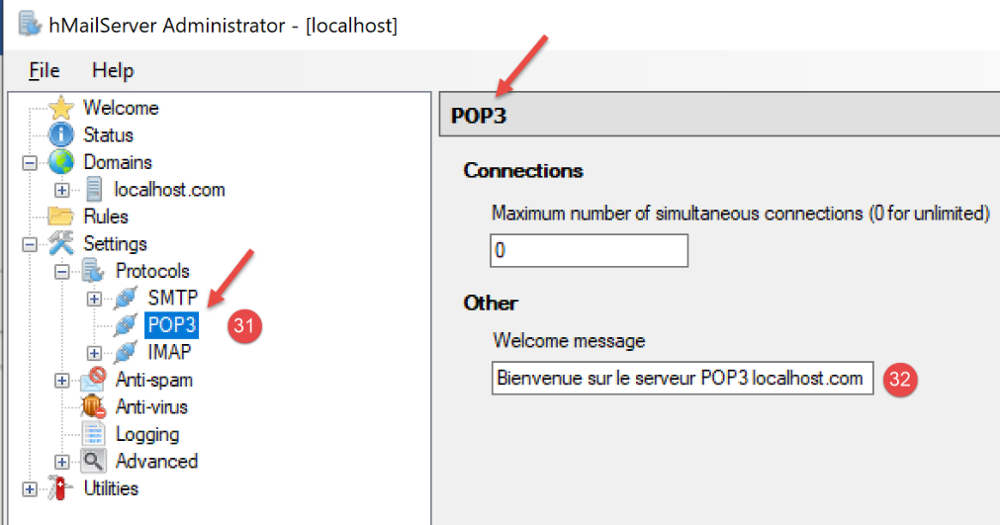
Fazemos o mesmo para o servidor IMAP:

Especificamos o domínio padrão do servidor [hMailServer] (pode haver vários) :

- Em [37], especifique que o domínio do servidor SMTP predefinido é aquele que criou em [38];
Depois de guardar esta configuração, pode testá-la da seguinte forma. Abra um terminal PyCharm na pasta utilitários:

Em seguida, digite o seguinte comando:
(venv) C:\Data\st-2020\dev\python\cours-2020\python3-flask-2020\inet\utilitaires>RawTcpClient.exe localhost 25
Client [DESKTOP-30FF5FB:50170] connecté au serveur [localhost-25]
Tapez vos commandes (quit pour arrêter) :
<-- [220 Bienvenue sur le serveur SMTP localhost.com]
- Linha 1: Ligamo-nos à porta 25 na máquina [localhost]. É aqui que está a funcionar um servidor SMTP não seguro do servidor [hMailServer];
- linha 4: recebemos a mensagem de boas-vindas que configurámos no passo 30 acima;
O servidor SMTP está agora em funcionamento. Digite o comando [quit] para encerrar a sessão com o servidor SMTP 25.
Agora vamos fazer o mesmo com a porta 587, que é a porta padrão para o serviço de retransmissão de e-mail SMTP seguro:
(venv) C:\Data\st-2020\dev\python\cours-2020\python3-flask-2020\inet\utilitaires>RawTcpClient.exe localhost 587
Client [DESKTOP-30FF5FB:50217] connecté au serveur [localhost-587]
Tapez vos commandes (quit pour arrêter) :
<-- [220 Bienvenue sur le serveur SMTP localhost.com]
- linha 4, a resposta do servidor SMTP em execução na porta 587;
Agora vamos fazer o mesmo com a porta 110, que é a porta padrão para o serviço de recuperação de e-mail POP3:
(venv) C:\Data\st-2020\dev\python\cours-2020\python3-flask-2020\inet\utilitaires>RawTcpClient.exe localhost 110
Client [DESKTOP-30FF5FB:50210] connecté au serveur [localhost-110]
Tapez vos commandes (quit pour arrêter) :
<-- [+OK Bienvenue sur le serveur POP3 localhost.com]
- na linha 4, recebemos a mensagem de boas-vindas do servidor POP3;
Agora vamos fazer o mesmo com a porta 143, que é a porta padrão para o serviço de recuperação de e-mail IMAP:
(venv) C:\Data\st-2020\dev\python\cours-2020\python3-flask-2020\inet\utilitaires>RawTcpClient.exe localhost 143
Client [DESKTOP-30FF5FB:50212] connecté au serveur [localhost-143]
Tapez vos commandes (quit pour arrêter) :
<-- [* OK Bienvenue sur le serveur IMAP localhost.com]
- na linha 4, recebemos a mensagem de boas-vindas do servidor IMAP;
21.5.4. Instalar um cliente de e-mail
Para ler o e-mail que vamos enviar, precisamos de um cliente de e-mail. Para quem não tem um, vamos mostrar-lhe como instalar e configurar o [Thunderbird]:
- Passo [1]: Descarregue o [Thunderbird] e instale-o;

- Inicie o servidor de e-mail [hMailServer] se ainda não estiver a funcionar;
- Passo [2-3]: assim que o Thunderbird estiver a funcionar, iremos criar uma conta de e-mail para o utilizador [guest@localhost] no servidor de e-mail [hMailServer];


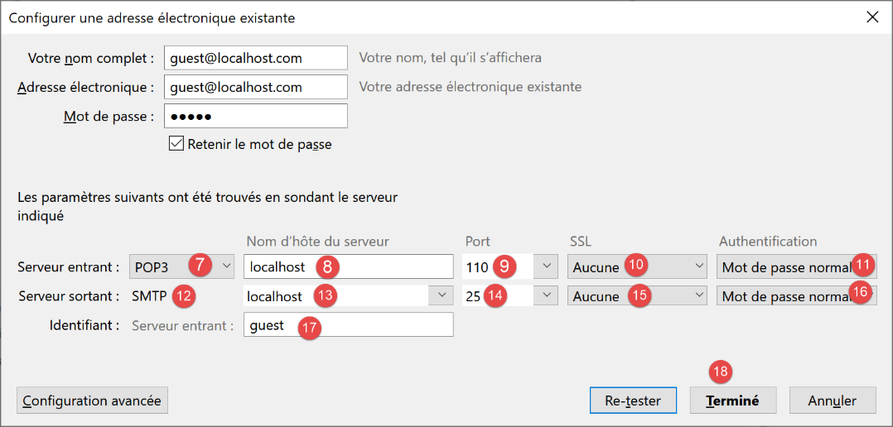
- em [7-11]: o servidor POP3 que nos permitirá ler o correio do servidor de correio [hMailServer] está localizado em [localhost] e funciona na porta 110;
- em [12-16]: o servidor SMTP que nos permitirá enviar e-mails em nome dos utilizadores do servidor de e-mail [hMailServer] está localizado em [localhost] e funciona na porta 25;
- [18]: Pode verificar se esta configuração é válida;


- em [26]: como não há encriptação SSL, o Thunderbird avisa-nos de que a nossa configuração apresenta riscos;
- em [28]: a conta foi criada;
Para testar a conta criada, vamos utilizar o Thunderbird para:
- enviar um e-mail para o utilizador [guest@localhost.com] (protocolo SMTP);
- ler o e-mail recebido por este utilizador (protocolo POP3);

- em [3]: o remetente;
- em [4]: o destinatário;
- em [5]: o assunto do e-mail;
- em [6]: o conteúdo do e-mail;
- em [7]: para enviar o e-mail;

- em [8-9]: recuperar o e-mail do utilizador [guest@localhost];
- em [10-15]: a mensagem recebida;
Também enviaremos um e-mail ao utilizador [pymailparlexemple@gmail.com]. Vamos criar uma conta para ele no Thunderbird para que possa ler o e-mail que receber:

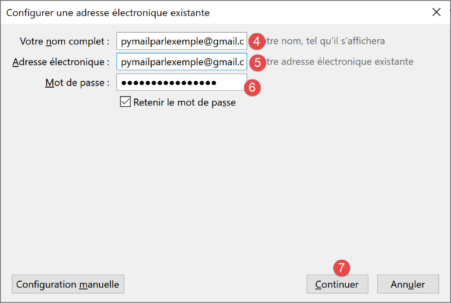
- em [4]: introduza o que quiser;
- em [5]: o endereço é [pymailparlexemple@gmail.com];
- em [6]: introduza a palavra-passe que atribuiu a este utilizador quando criou a conta;
- em [7]: confirme esta configuração;

- em [8]: o Thunderbird recuperou as seguintes informações da sua base de dados;
- em [9]: o protocolo de recuperação de e-mails já não é o POP3, mas sim o IMAP. A principal diferença entre os dois é que o [POP3] transfere os e-mails lidos para o computador local onde o cliente de e-mail está instalado e os elimina do servidor remoto, enquanto o [IMAP] mantém os e-mails no servidor remoto;
- em [10]: identificação do servidor SMTP;
- em [13]: para obter mais informações sobre os servidores IMAP e SMTP, mude para a configuração manual;

- em [14-17]: definições do servidor IMAP;
- em [18-21]: configurações do servidor SMTP;
- em [22]: conclua a configuração;

- em [23-24]: a nova conta do Thunderbird;
- em [26]: escreva uma nova mensagem;
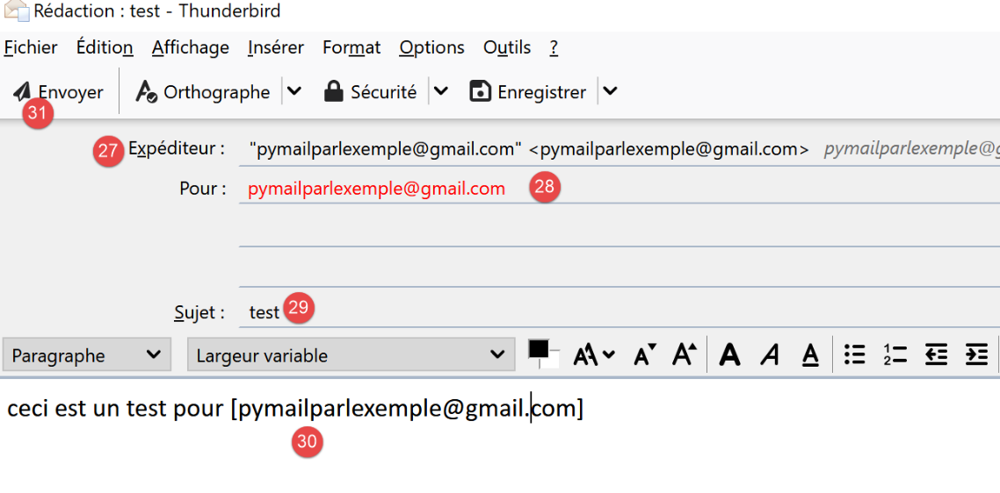
- em [27]: o remetente é [pymailparlexemple@gmail.com];
- em [28]: o destinatário é [pymailparlexemple@gmail.com];
- em [29-30]: a mensagem;
- em [31]: para enviá-la;

- em [32]: verificamos o correio das várias contas;

- em [33-36]: o e-mail recebido pelo utilizador [pymailparlexemple@gmail.com]
Também criamos:
- uma nova conta Gmail [pymail2parlexemple@gmail.com];
- uma nova conta Thunderbird [pymail2parlexemple@gmail.com] para recuperar mensagens para o utilizador com o mesmo nome:


Agora temos as ferramentas para explorar os protocolos SMTP, POP3 e IMAP. Vamos começar pelo protocolo SMTP.
21.5.5. O Protocolo SMTP

Vamos explorar o protocolo SMTP analisando os registos do servidor [hMailServer]. Para tal, ativamo-los utilizando a ferramenta [hMailServerAdministrator]:


- Em [2], os registos estão ativados;
- em [3-5]: ativamo-los para os protocolos SMTP, POP3 e IMAP;
- em [7], solicitamos a sua visualização;
- em [8], abra o ficheiro de registo com qualquer editor de texto;
No exemplo seguinte, o cliente será o [Thunderbird] e o servidor será o [hMailServer]. Utilizando o Thunderbird, peça ao utilizador [guest@localhost.com] para enviar uma mensagem a si próprio:

Os registos ficarão então assim:
"SMTPD" 5828 22 "2020-07-07 10:02:54.263" "127.0.0.1" "SENT: 220 Bienvenue sur le serveur SMTP localhost.com"
"SMTPD" 21956 22 "2020-07-07 10:02:54.360" "127.0.0.1" "RECEIVED: EHLO [127.0.0.1]"
"SMTPD" 21956 22 "2020-07-07 10:02:54.362" "127.0.0.1" "SENT: 250-DESKTOP-30FF5FB[nl]250-SIZE 20480000[nl]250-AUTH LOGIN[nl]250 HELP"
"SMTPD" 5828 22 "2020-07-07 10:02:54.381" "127.0.0.1" "RECEIVED: MAIL FROM:<guest@localhost.com> SIZE=433"
"SMTPD" 5828 22 "2020-07-07 10:02:54.386" "127.0.0.1" "SENT: 250 OK"
"SMTPD" 21956 22 "2020-07-07 10:02:54.470" "127.0.0.1" "RECEIVED: RCPT TO:<guest@localhost.com>"
"SMTPD" 21956 22 "2020-07-07 10:02:54.473" "127.0.0.1" "SENT: 250 OK"
"SMTPD" 21956 22 "2020-07-07 10:02:54.478" "127.0.0.1" "RECEIVED: DATA"
"SMTPD" 21956 22 "2020-07-07 10:02:54.479" "127.0.0.1" "SENT: 354 OK, send."
"SMTPD" 21860 22 "2020-07-07 10:02:54.496" "127.0.0.1" "SENT: 250 Queued (0.016 seconds)"
"SMTPD" 21568 22 "2020-07-07 10:02:54.505" "127.0.0.1" "RECEIVED: QUIT"
"SMTPD" 21568 22 "2020-07-07 10:02:54.506" "127.0.0.1" "SENT: 221 goodbye"
As linhas acima descrevem o diálogo que ocorreu entre o cliente SMTP (o cliente de e-mail Thunderbird) e o servidor SMTP (hMailServer). As linhas [SENT] indicam o que o servidor SMTP enviou ao seu cliente. As linhas [RECEIVED] indicam o que o servidor SMTP recebeu do seu cliente.
- Linha 1: Imediatamente após o cliente se ligar ao servidor SMTP, o servidor envia uma mensagem de boas-vindas ao cliente;
- linha 2: o cliente envia o comando [EHLO] para se identificar. Aqui, fornece o seu endereço IP [127.0.0.1], que se refere à máquina [localhost], ou seja, a máquina que está a executar o cliente SMTP;
- Linha 3: O servidor envia uma série de respostas [250]. [nl] significa [nova linha], ou seja, o caractere \n. As respostas têm o formato [250-], exceto a última, que tem o formato [250 ]. É assim que o cliente SMTP sabe que a resposta do servidor SMTP está completa e que pode enviar um comando. A série de comandos [250] destinava-se a indicar ao cliente SMTP um conjunto de comandos que poderia utilizar;
- linha 4: o cliente SMTP envia o comando [MAIL FROM: endereço_de_e-mail_do_remetente], que indica quem está a enviar a mensagem;
- linha 5: o servidor SMTP responde com [250 OK], indicando que compreendeu o comando;
- linha 6: o cliente SMTP envia o comando [RCPT TO: endereço_de_e-mail_do_destinatário] para especificar o endereço do destinatário;
- Linha 7: O servidor SMTP indica novamente que compreendeu o comando;
- linha 8: o servidor SMTP envia o comando [DATA]. Isto significa que vai enviar o conteúdo da mensagem;
- Linha 9: O servidor SMTP indica, com a resposta [354 OK], que está pronto para receber a mensagem. O texto [send .] indica que o cliente SMTP deve terminar a sua mensagem com uma linha contendo apenas um ponto;
- O que não vemos a seguir é que o cliente SMTP envia a sua mensagem. Os registos não mostram isto;
- Linha 10: O cliente SMTP enviou o ponto final, indicando o fim da mensagem. O servidor SMTP responde que colocou a mensagem na fila;
- o cliente SMTP envia o comando [QUIT] para indicar que está a encerrar a ligação;
- Linha 12: O servidor responde;
Agora que compreendemos o diálogo cliente/servidor do protocolo SMTP, vamos tentar replicá-lo com o nosso [RawTcpClient]. Vamos utilizar um terminal PyCharm:
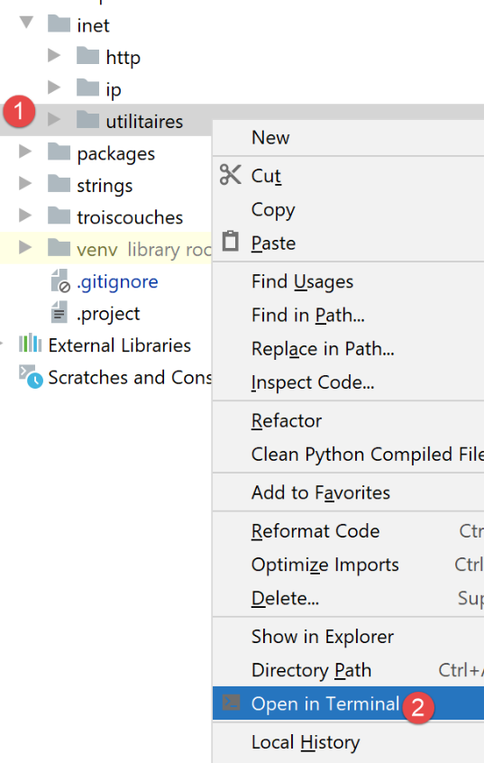
Vejamos um novo exemplo:
- O Cliente A será o cliente TCP genérico [RawTcpClient];
- O servidor B será o servidor de e-mail [hMailServer];
- O Cliente A pedirá ao Servidor B para entregar um e-mail enviado pelo utilizador [guest@localhost.com] a si próprio;
- vamos verificar se o destinatário recebeu efetivamente o e-mail enviado;
Iniciamos o cliente da seguinte forma:
(venv) C:\Data\st-2020\dev\python\cours-2020\python3-flask-2020\inet\utilitaires>RawTcpClient.exe localhost 25 --quit bye
Client [DESKTOP-30FF5FB:53122] connecté au serveur [localhost-25]
Tapez vos commandes (quit pour arrêter) :
<-- [220 Bienvenue sur le serveur SMTP localhost.com]
- na linha [1], ligamo-nos à porta 25 na máquina local, onde o serviço SMTP [hMailServer] está em execução. O argumento [--quit bye] indica que o utilizador sairá do programa digitando o comando [bye]. Sem este argumento, o comando para encerrar o programa é [quit]. No entanto, [quit] é também um comando do protocolo SMTP. Devemos, portanto, evitar esta ambiguidade;
- linha [2], o cliente está conectado com sucesso;
- linha [3], o cliente aguarda comandos introduzidos a partir do teclado;
- linha [4], o servidor envia ao cliente a sua mensagem de boas-vindas;
Continuamos o diálogo da seguinte forma:
(venv) C:\Data\st-2020\dev\python\cours-2020\python3-flask-2020\inet\utilitaires>RawTcpClient.exe localhost 25
Client [DESKTOP-30FF5FB:53155] connecté au serveur [localhost-25]
Tapez vos commandes (quit pour arrêter) :
<-- [220 Bienvenue sur le serveur SMTP localhost.com]
EHLO localhost
<-- [250-DESKTOP-30FF5FB]
<-- [250-SIZE 20480000]
<-- [250-AUTH LOGIN]
<-- [250 HELP]
MAIL FROM: guest@localhost.com
<-- [250 OK]
RCPT TO: guest@localhost.com
<-- [250 OK]
DATA
<-- [354 OK, send.]
from: guest@localhost.com
to: guest@localhost.com
subject: ceci est un test
ligne1
ligne2
.
<-- [250 Queued (37.824 seconds)]
QUIT
Fin de la connexion avec le serveur
- em [5], o cliente envia o comando [EHLO nome-da-máquina-do-cliente]. O servidor responde com uma série de mensagens no formato [250-xx] (6). O código [250] indica que o comando enviado pelo cliente foi bem-sucedido;
- Em [10], o cliente especifica o remetente da mensagem, neste caso [guest@localhost.com];
- em [11], a resposta do servidor;
- em [12], é indicado o destinatário da mensagem, neste caso o utilizador [guest@localhost.com];
- em [13], a resposta do servidor;
- em [14], o comando [DATA] informa ao servidor que o cliente está prestes a enviar o conteúdo da mensagem;
- em [15], a resposta do servidor;
- em [16-22], o cliente deve enviar uma lista de linhas de texto terminando com uma linha contendo apenas um único ponto. A mensagem pode conter as linhas [Subject:, From:, To:] (16-18) para definir o assunto, o remetente e o destinatário da mensagem, respetivamente;
- em [19], os cabeçalhos anteriores devem ser seguidos por uma linha em branco;
- em [20-21], o texto da mensagem;
- em [22], a linha contendo apenas um único ponto, que indica o fim da mensagem;
- em [23], assim que o servidor receber a linha contendo apenas um único ponto, coloca a mensagem na fila;
- em [24], o cliente informa ao servidor que terminou;
- em [25], vemos que o servidor encerrou a ligação com o cliente;
Agora vamos verificar no Thunderbird se o utilizador [guest@localhost.com] recebeu efetivamente a mensagem:

- Em [1-6], vemos que o utilizador [guest@localhost.com] recebeu efetivamente a mensagem;
Por fim, o nosso cliente [RawTcpClient] enviou com sucesso uma mensagem através do servidor SMTP [localhost]. Agora, vamos usar o mesmo método para enviar uma mensagem para [pymailparlexemple@gmail.com]:
(venv) C:\Data\st-2020\dev\python\cours-2020\python3-flask-2020\inet\utilitaires>RawTcpClient.exe smtp.gmail.com 587
Client [DESKTOP-30FF5FB:53210] connecté au serveur [smtp.gmail.com-587]
Tapez vos commandes (quit pour arrêter) :
<-- [220 smtp.gmail.com ESMTP w13sm643278wrr.67 - gsmtp]
EHLO localhost
<-- [250-smtp.gmail.com at your service, [2a01:cb05:80e8:b500:3c4b:2203:91fa:9b00]]
<-- [250-SIZE 35882577]
<-- [250-8BITMIME]
<-- [250-STARTTLS]
<-- [250-ENHANCEDSTATUSCODES]
<-- [250-PIPELINING]
<-- [250-CHUNKING]
<-- [250 SMTPUTF8]
MAIL FROM: pymailparlexemple@gmail.com
<-- [530 5.7.0 Must issue a STARTTLS command first. w13sm643278wrr.67 - gsmtp]
QUIT
Fin de la connexion avec le serveur
- linha 1: estamos a utilizar o servidor SMTP do Gmail, que opera na porta 587;
- linha 15: estamos bloqueados porque o servidor SMTP está a pedir-nos para estabelecer uma ligação segura, o que não sabemos fazer. Ao contrário do exemplo anterior, o servidor [smtp.gmail.com] (linha 1) requer uma autenticaçã . Só aceita clientes que estejam registados no domínio [gmail.com]. Esta autenticação é segura e ocorre através de uma ligação encriptada.
O primeiro exemplo deu-nos os fundamentos para construir um cliente SMTP básico em Python. O segundo mostrou-nos que alguns servidores SMTP (a maioria, na verdade) exigem autenticação através de uma ligação encriptada.
21.5.6. scripts [smtp/01]: um cliente SMTP básico
Vamos implementar em Python o que aprendemos anteriormente sobre o protocolo SMTP.

O ficheiro [smtp/01/config] configura a aplicação da seguinte forma:
- Linhas 10–35: uma lista de e-mails a enviar. Para cada um, são especificadas as seguintes informações:
- [description]: um texto que descreve o e-mail;
- [smtp-server]: o servidor SMTP a utilizar;
- [smtp-port]: a sua porta de serviço;
- [de]: o remetente do e-mail;
- [para]: o destinatário do e-mail;
- [assunto]: o assunto do e-mail;
- [content-type]: a codificação do e-mail;
- [mensagem]: a mensagem do e-mail;
O código [01/main] para o cliente SMTP é o seguinte:
1 2 3 4 5 6 7 8 9 10 11 12 13 14 15 16 17 18 19 20 21 22 23 24 25 26 27 28 29 30 31 32 33 34 35 36 37 38 39 40 41 42 43 44 45 46 47 48 49 50 51 52 53 54 55 56 57 58 59 60 61 62 63 64 65 66 67 68 69 70 71 72 73 74 75 76 77 78 79 80 81 82 83 84 85 86 87 88 89 90 91 92 93 94 95 96 97 98 99 100 101 102 103 104 105 106 107 108 109 110 111 112 113 114 115 116 117 118 119 120 121 122 123 124 125 126 127 128 129 130 131 132 133 134 135 136 137 138 139 140 141 142 143 144 145 146 147 148 149 150 151 152 153 154 155 156 157 158 159 | |
Comentários
- linhas 134–136: configurar a aplicação;
- linhas 139–151: processamos todos os e-mails encontrados na configuração;
- linhas 141–143: exibimos o que vamos fazer;
- linhas 144–149: definimos a mensagem a enviar. A mensagem [message] é precedida pelos cabeçalhos [From, To, Subject, Content-type];
- linha 151: o e-mail é enviado utilizando a função [sendmail], que recebe dois parâmetros:
- [mail]: o dicionário que contém as informações necessárias para enviar o e-mail;
- [verbose]: um valor booleano que indica se as trocas entre cliente e servidor devem ou não ser registadas na consola;
- linhas 154–156: todas as exceções lançadas pela função [sendmail] são capturadas. São exibidas;
- linha 6: [mail] é o dicionário que descreve o e-mail a ser enviado;
- linha 14: no protocolo SMTP, o cliente deve enviar o seu nome. Aqui, recuperamos o nome da máquina local que atuará como cliente;
- linha 16: liga-se ao servidor SMTP para o qual a mensagem será enviada;
- linhas 22–23: se a ligação ao servidor SMTP for bem-sucedida, o servidor enviará uma mensagem de boas-vindas, que é lida aqui;
- A função [sendmail] envia então os vários comandos que um cliente SMTP deve enviar:
- linhas 24–25: o comando EHLO;
- linhas 26–27: o comando MAIL FROM:;
- linhas 28–29: o comando RCPT TO:;
- linhas 30–31: o comando DATA;
- linhas 32–41: envio da mensagem (De, Para, Assunto, Tipo de conteúdo, texto);
- linhas 42-43: envio do caractere de fim de mensagem;
- linhas 44-457: o comando QUIT, que encerra o diálogo do cliente com o servidor SMTP;
- a execução de [sendmail] ocorre dentro de um bloco [try / finally] que permite que todas as exceções sejam propagadas para o código de chamada. Sabemos que o código de chamada as captura todas para as exibir;
- linhas 48–50: libertação de recursos;
- linha 54: a função [send_command] é responsável por enviar os comandos do cliente para o servidor SMTP. Aceita quatro parâmetros:
- [connection]: a ligação que une o cliente ao servidor;
- [command]: o comando a enviar;
- [verbose]: se TRUE, as trocas cliente/servidor são registadas na consola;
- [with_rclf]: se TRUE, envia o comando terminado pela sequência \r\n. Isto é necessário para todos os comandos do protocolo SMTP, mas [send_command] também é usado para enviar a mensagem. Nesse caso, a sequência \r\n não é adicionada;
- linha 62: o comando é enviado apenas se não estiver vazio;
- linhas 65-66: o comando é enviado ao servidor como uma cadeia de bytes UTF-8;
- linhas 70-71: lê todas as linhas da resposta. Assumimos que tem menos de 1000 caracteres. A resposta pode conter várias linhas. Cada linha tem o formato XXX-YYY, em que XXX é um código numérico, exceto a última linha da resposta, que tem o formato XXX YYY (sem hífen);
- linhas 76: lê o código de erro XXX da primeira linha;
- linhas 78–80: se o código numérico XXX for superior a 500, então o servidor devolveu um erro. É então lançada uma exceção;
Resultados
A execução do script produz a seguinte saída na consola:
C:\Data\st-2020\dev\python\cours-2020\python3-flask-2020\venv\Scripts\python.exe C:/Data/st-2020/dev/python/cours-2020/python3-flask-2020/inet/smtp/01/main.py
----------------------------------
Envoi du message [mail to localhost via localhost]
--> [EHLO DESKTOP-30FF5FB]
<-- [220 Bienvenue sur le serveur SMTP localhost.com]
--> [MAIL FROM: <guest@localhost.com>]
<-- [250-DESKTOP-30FF5FB
250-SIZE 20480000
250-AUTH LOGIN
250 HELP]
--> [RCPT TO: <guest@localhost.com>]
<-- [250 OK]
--> [DATA]
<-- [250 OK]
--> [From: guest@localhost.com
To: guest@localhost.com
Subject: to localhost via localhost
Content-type: text/plain; charset="utf-8"
aglaë séléné
va au marché
acheter des fleurs]
<-- [354 OK, send.]
--> [
.
]
<-- [250 Queued (0.000 seconds)]
--> [QUIT]
<-- [221 goodbye]
Message envoyé...
----------------------------------
Envoi du message [mail to gmail via gmail]
--> [EHLO DESKTOP-30FF5FB]
<-- [220 smtp.gmail.com ESMTP u1sm1364433wrb.78 - gsmtp]
--> [MAIL FROM: <pymailparlexemple@gmail.com>]
<-- [250-smtp.gmail.com at your service, [2a01:cb05:80e8:b500:3c4b:2203:91fa:9b00]
250-SIZE 35882577
250-8BITMIME
250-STARTTLS
250-ENHANCEDSTATUSCODES
250-PIPELINING
250-CHUNKING
250 SMTPUTF8]
--> [RCPT TO: <pymailparlexemple@gmail.com>]
<-- [530 5.7.0 Must issue a STARTTLS command first. u1sm1364433wrb.78 - gsmtp]
L'erreur suivante s'est produite : 5.7.0 Must issue a STARTTLS command first. u1sm1364433wrb.78 - gsmtp
Process finished with exit code 0
- Linhas 3–30: A utilização do servidor SMTP [hMailServer] para enviar um e-mail para [guest@localhost] funciona corretamente;
- Linhas 32–46: A utilização do servidor SMTP [smtp.gmail.com] para enviar um e-mail para [pymailparlexemple@gmail.com] falha: na linha 45, o servidor SMTP devolve o código de erro 530 com uma mensagem de erro. Isto indica que o cliente SMTP deve primeiro autenticar-se através de uma ligação segura. O nosso cliente não o fez e, por isso, é rejeitado;
Os resultados no Thunderbird são os seguintes:

21.5.7. scripts [smtp/02]: um cliente SMTP escrito utilizando a biblioteca [smtplib]

O cliente anterior tem pelo menos duas deficiências:
- não consegue utilizar uma ligação segura se o servidor a exigir;
- não consegue anexar ficheiros à mensagem;
Iremos resolver a primeira falha no script [smtp/02]. No nosso novo script, iremos utilizar o módulo [smtplib] do Python.
O script [smtp/02/main] utilizará o seguinte ficheiro de configuração JSON [smtp/02/config]:
Estão presentes os mesmos campos que no ficheiro [smtp/01/config], com dois campos adicionais quando o servidor SMTP requer autenticação:
- linha 31, [user]: o nome de utilizador utilizado para autenticar a ligação;
- linha 32, [password]: a sua palavra-passe;
Estes dois campos só estão presentes se o servidor SMTP contactado exigir autenticação. Esta é então realizada através de uma ligação segura.
O código do script [smtp/02/main.py] é o seguinte:
Comentários
- linhas 8–35: apenas a função [sendmail] é utilizada. Agora irá utilizar o módulo [smtplib] (linha 2);
- Linha 16: Ligar-se ao servidor SMTP;
- linha 18: se [verbose=True], as trocas entre cliente e servidor serão exibidas na consola;
- linhas 20–24: a autenticação é realizada se exigida pelo servidor SMTP;
- linha 22: a autenticação é realizada através de uma ligação segura;
- linha 24: autenticação;
- linhas 26–33: envio da mensagem. O diálogo com o script [smtp/01/main] terá então lugar. Se tiver ocorrido autenticação, esta será realizada através de uma ligação segura;
- linha 35: o diálogo cliente/servidor termina;
Antes de executar o script [smtp/02/main], deve modificar as definições da conta Gmail [pymailparlexemple@gmail.com]:
- Inicie sessão na conta do Gmail [pymailparlexemple@gmail.com];
- modifique as seguintes configurações:

- Em [2], permita que aplicações menos seguras acedam à conta;
Faça o mesmo para a segunda conta do Gmail [pymail2parlexemple@gmail.com].
Resultados
Ao executar o script [smtp/02/main], é apresentada a seguinte saída na consola:
C:\Data\st-2020\dev\python\cours-2020\python3-flask-2020\venv\Scripts\python.exe C:/Data/st-2020/dev/python/cours-2020/python3-flask-2020/inet/smtp/02/main.py
----------------------------------
Envoi du message [mail to localhost via localhost avec smtplib]
send: 'ehlo [192.168.43.163]\r\n'
reply: b'250-DESKTOP-30FF5FB\r\n'
reply: b'250-SIZE 20480000\r\n'
reply: b'250-AUTH LOGIN\r\n'
reply: b'250 HELP\r\n'
reply: retcode (250); Msg: b'DESKTOP-30FF5FB\nSIZE 20480000\nAUTH LOGIN\nHELP'
send: 'mail FROM:<guest@localhost.com> size=310\r\n'
reply: b'250 OK\r\n'
reply: retcode (250); Msg: b'OK'
send: 'rcpt TO:<guest@localhost.com>\r\n'
reply: b'250 OK\r\n'
reply: retcode (250); Msg: b'OK'
send: 'data\r\n'
reply: b'354 OK, send.\r\n'
reply: retcode (354); Msg: b'OK, send.'
data: (354, b'OK, send.')
send: b'Content-Type: text/plain; charset="utf-8"\r\nMIME-Version: 1.0\r\nContent-Transfer-Encoding: base64\r\nfrom: guest@localhost.com\r\nto: guest@localhost.com\r\ndate: Wed, 08 Jul 2020 08:35:39 +0200\r\nsubject: to localhost via localhost avec smtplib\r\n\r\nYWdsYcOrIHPDqWzDqW7DqQp2YSBhdSBtYXJjaMOpCmFjaGV0ZXIgZGVzIGZsZXVycw==\r\n.\r\n'
reply: b'250 Queued (0.000 seconds)\r\n'
reply: retcode (250); Msg: b'Queued (0.000 seconds)'
data: (250, b'Queued (0.000 seconds)')
send: 'quit\r\n'
reply: b'221 goodbye\r\n'
reply: retcode (221); Msg: b'goodbye'
Message envoyé...
----------------------------------
Envoi du message [mail to gmail via gmail avec smtplib]
send: 'ehlo [192.168.43.163]\r\n'
reply: b'250-smtp.gmail.com at your service, [37.172.118.130]\r\n'
reply: b'250-SIZE 35882577\r\n'
reply: b'250-8BITMIME\r\n'
reply: b'250-STARTTLS\r\n'
reply: b'250-ENHANCEDSTATUSCODES\r\n'
reply: b'250-PIPELINING\r\n'
reply: b'250-CHUNKING\r\n'
reply: b'250 SMTPUTF8\r\n'
reply: retcode (250); Msg: b'smtp.gmail.com at your service, [37.172.118.130]\nSIZE 35882577\n8BITMIME\nSTARTTLS\nENHANCEDSTATUSCODES\nPIPELINING\nCHUNKING\nSMTPUTF8'
send: 'STARTTLS\r\n'
reply: b'220 2.0.0 Ready to start TLS\r\n'
reply: retcode (220); Msg: b'2.0.0 Ready to start TLS'
send: 'ehlo [192.168.43.163]\r\n'
reply: b'250-smtp.gmail.com at your service, [37.172.118.130]\r\n'
reply: b'250-SIZE 35882577\r\n'
reply: b'250-8BITMIME\r\n'
reply: b'250-AUTH LOGIN PLAIN XOAUTH2 PLAIN-CLIENTTOKEN OAUTHBEARER XOAUTH\r\n'
reply: b'250-ENHANCEDSTATUSCODES\r\n'
reply: b'250-PIPELINING\r\n'
reply: b'250-CHUNKING\r\n'
reply: b'250 SMTPUTF8\r\n'
reply: retcode (250); Msg: b'smtp.gmail.com at your service, [37.172.118.130]\nSIZE 35882577\n8BITMIME\nAUTH LOGIN PLAIN XOAUTH2 PLAIN-CLIENTTOKEN OAUTHBEARER XOAUTH\nENHANCEDSTATUSCODES\nPIPELINING\nCHUNKING\nSMTPUTF8'
send: 'AUTH PLAIN AHB5bWFpbDJwYXJsZXhlbXBsZUBnbWFpbC5jb20AIzZwcklsaEQmQDFRWjNURw==\r\n'
reply: b'235 2.7.0 Accepted\r\n'
reply: retcode (235); Msg: b'2.7.0 Accepted'
send: 'mail FROM:<pymail2parlexemple@gmail.com> size=320\r\n'
reply: b'250 2.1.0 OK e5sm4132618wrs.33 - gsmtp\r\n'
reply: retcode (250); Msg: b'2.1.0 OK e5sm4132618wrs.33 - gsmtp'
send: 'rcpt TO:<pymail2parlexemple@gmail.com>\r\n'
reply: b'250 2.1.5 OK e5sm4132618wrs.33 - gsmtp\r\n'
reply: retcode (250); Msg: b'2.1.5 OK e5sm4132618wrs.33 - gsmtp'
send: 'data\r\n'
reply: b'354 Go ahead e5sm4132618wrs.33 - gsmtp\r\n'
reply: retcode (354); Msg: b'Go ahead e5sm4132618wrs.33 - gsmtp'
data: (354, b'Go ahead e5sm4132618wrs.33 - gsmtp')
send: b'Content-Type: text/plain; charset="utf-8"\r\nMIME-Version: 1.0\r\nContent-Transfer-Encoding: base64\r\nfrom: pymail2parlexemple@gmail.com\r\nto: pymail2parlexemple@gmail.com\r\ndate: Wed, 08 Jul 2020 08:35:40 +0200\r\nsubject: to gmail via gmail avec smtplib\r\n\r\nYWdsYcOrIHPDqWzDqW7DqQp2YSBhdSBtYXJjaMOpCmFjaGV0ZXIgZGVzIGZsZXVycw==\r\n.\r\n'
reply: b'250 2.0.0 OK 1594190139 e5sm4132618wrs.33 - gsmtp\r\n'
reply: retcode (250); Msg: b'2.0.0 OK 1594190139 e5sm4132618wrs.33 - gsmtp'
data: (250, b'2.0.0 OK 1594190139 e5sm4132618wrs.33 - gsmtp')
send: 'quit\r\n'
Message envoyé...
reply: b'221 2.0.0 closing connection e5sm4132618wrs.33 - gsmtp\r\n'
reply: retcode (221); Msg: b'2.0.0 closing connection e5sm4132618wrs.33 - gsmtp'
Process finished with exit code 0
- linha 40: o cliente [smtplib] inicia o diálogo para estabelecer uma ligação encriptada com o servidor SMTP, o que não conseguimos fazer no script [smtp/main/01];
- caso contrário, vemos os comandos familiares do protocolo SMTP;
Se verificarmos a conta Gmail do utilizador [pymail2parlexemple], vemos o seguinte:

21.5.8. scripts [smtp/03]: tratamento de ficheiros anexados
Concluímos o script [smtp/02/main] para que o e-mail enviado possa ter anexos.
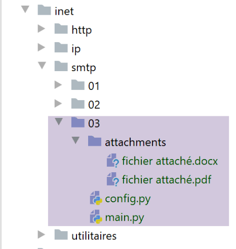
O script [smtp/03/main] é configurado pelo seguinte script [smtp/03/config]:
O ficheiro [smtp/03/config] difere do ficheiro [smtp/02/config] utilizado anteriormente apenas pela presença opcional de uma lista [attachments] (linhas 30–32), que especifica a lista de ficheiros a anexar à mensagem a enviar.
O script [smtp/03/main] é o seguinte:
Comentários
- linhas 18-32: a função [sendmail] permanece a mesma que era quando não havia anexos;
- linha 35: o código a seguir foi retirado da documentação oficial do Python;
- linha 36: a mensagem a enviar será composta por várias partes: texto e ficheiros anexados. Isto é designado por mensagem [Multipart];
- linhas 37–40: a mensagem [Multipart] contém os campos habituais encontrados em qualquer e-mail;
- linha 42: as várias partes da mensagem [Multipart] [msg] são anexadas à mensagem utilizando o método [msg.attach] (linha 81). As partes anexadas podem ser de qualquer tipo. Estas são identificadas por um tipo MIME. O tipo MIME para texto simples é [MIMEText];
- linhas 44–81: todos os anexos da mensagem a enviar são anexados à mensagem [Multipart] [msg] (linha 81);
- linha 44: [path] representa o caminho absoluto do ficheiro a ser anexado;
- linha 47: para determinar o tipo MIME a utilizar para o anexo, utilizaremos a extensão do ficheiro (.docx, .php, etc.) do ficheiro a ser anexado. O método [mimetypes.guess_type] executa esta tarefa. Ele devolve duas informações:
- [ctype]: o tipo MIME do ficheiro;
- [encoding]: informações sobre a sua codificação;
- linhas 49–52: se o tipo MIME do ficheiro não puder ser determinado, este é tratado como um ficheiro binário (linha 52);
- linha 54: o tipo MIME de um ficheiro é dividido em tipo primário / tipo secundário, por exemplo [application/pdf]. Separamos estes dois elementos;
- linhas 56–76: são tratados diferentes casos, dependendo do valor do tipo MIME primário. Por exemplo, no caso de um ficheiro PDF ([application/pdf]), são executadas as linhas 70–76:
- linhas 56–59: o caso em que o ficheiro anexado é um ficheiro de texto. Neste caso, é criado um elemento do tipo [MIMEText] com o conteúdo [fp.read];
- linhas 60–62: o caso em que o ficheiro contém uma imagem. Neste caso, criamos um elemento do tipo [MIMEImage] com conteúdo [fp.read];
- linhas 63–65: o caso em que o ficheiro é um ficheiro de áudio. Neste caso, é criado um elemento do tipo [MIMEAudio] com o conteúdo [fp.read];
- Linhas 66–69: o caso em que o ficheiro é um e-mail. Neste caso, criamos um elemento do tipo [MIMEMessage] (linha 69) com o conteúdo [email.message_from_bytes(fp.read())]. Ao contrário dos casos anteriores, em que o conteúdo do elemento MIME era o conteúdo binário do ficheiro associado, aqui o conteúdo do elemento MIMEMessage é do tipo [email.message.Message];
- linhas 70–76: outros casos. Isto inclui, por exemplo, os ficheiros Word e PDF do nosso exemplo;
- linha 72: o ficheiro a anexar é aberto no modo binário (rb=read binary);
- linha 74: [fp.read] lê todo o ficheiro binário;
- linhas 72–74: a estrutura [with open(…) as file] faz duas coisas:
- abre o ficheiro e atribui-lhe o descritor [file];
- garante que, ao sair do bloco [with], ocorra ou não um erro, o descritor [file] será fechado. É, portanto, uma alternativa à estrutura [try file=open(…)/ finally];
- linha 73: é criado um novo elemento [part] para ser incluído na mensagem Multipart. Aqui, é utilizada a classe [MIMEBase], e os elementos [maintype, subtype] determinados na linha 54 são passados para o construtor;
- linha 74: o elemento a ser incluído na mensagem Multipart deve ter conteúdo. Este pode ser inicializado utilizando o método [set_payload];
- linhas 75-76: os ficheiros anexados devem ser codificados em 7 bits. Historicamente, alguns servidores SMTP suportavam apenas caracteres codificados em 7 bits. Aqui, é utilizada a codificação conhecida como «Base64»;
- linha 77: a partir desta linha, o processamento é o mesmo que para todos os tipos MIME que criámos nas linhas 56–76 [MIMEMessage, MIMEImage, MIMEAudio, MIMEBase, MIMEText];
- linha 79: o elemento a ser adicionado à mensagem Multipart possui um cabeçalho que o descreve. Aqui indicamos que o elemento adicionado corresponde a um ficheiro anexado. O nome deste ficheiro é o terceiro parâmetro passado para o método [add_header]. Este nome de ficheiro é frequentemente utilizado por clientes de e-mail para guardar o ficheiro anexado com esse nome no sistema de ficheiros do cliente. Até agora, temos trabalhado com o caminho absoluto do ficheiro anexado. Aqui, passamos simplesmente o seu nome sem o caminho (linha 78);
- linha 81: os dados binários do ficheiro são incorporados na mensagem [msg Multipart];
- linha 83: assim que todas as partes da mensagem tiverem sido anexadas ao [msg Multipart], esta é enviada;
Resultados
Se executarmos o script [smtp/03/main] com o ficheiro [smtp/02/config] já apresentado, a conta [pymail2parlexemple@gmail.com] recebe isto:

Os ficheiros anexados são apresentados em [4, 9-11].
Vejamos agora um exemplo com um anexo de e-mail. Vamos guardar o e-mail recebido em [3] acima:
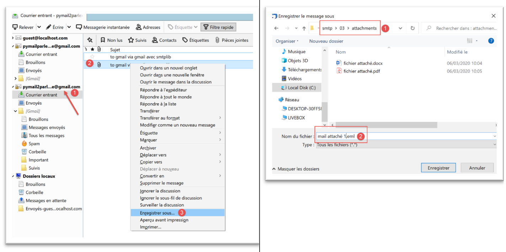
Guardamos o e-mail com o nome [mail attachment 1.eml] na pasta [smtp/03/attachments].
Vamos agora modificar o ficheiro [smtp/03/config] da seguinte forma:
- na linha 33, adicionámos um anexo;
Agora executamos novamente o script [smtp/03/main]. Isto produz o seguinte resultado na caixa de correio do utilizador [pymail2parlexemple@gmail.com]:
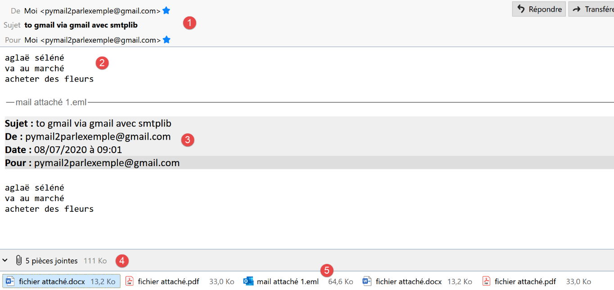
- em [1], o e-mail recebido;
- em [2]: o texto da mensagem;
- em [3]: o texto do e-mail anexado;
- em [4]: o Thunderbird encontrou 5 anexos:
- [ficheiro_anexado.docx];
- [ficheiro-anexado.pdf];
- [e-mail-anexado-1.eml]. Este anexo é, por sua vez, um e-mail que contém dois anexos:
- [ficheiro_anexado.docx];
- [ficheiro anexado.pdf];
21.6. O protocolo POP3
21.6.1. Introdução
Para ler e-mails armazenados num servidor de e-mail, existem dois protocolos:
- o protocolo POP3 (Post Office Protocol), historicamente o primeiro protocolo, mas raramente utilizado atualmente;
- o protocolo IMAP (Internet Message Access Protocol), que é mais recente do que o POP3 e atualmente o mais utilizado;
Para explorar o protocolo POP3, utilizaremos a seguinte arquitetura:

- O [Servidor B] será, dependendo da situação:
- um servidor POP3 local, implementado pelo servidor de e-mail [hMailServer];
- o servidor [pop.gmail.com], que é o servidor POP3 do serviço de e-mail [gmail.com];
- O [Cliente A] será um cliente POP3 sob várias formas:
- o cliente [RawTcpClient] para explorar o protocolo POP3;
- um script Python que emula o protocolo POP3 do cliente [RawTcpClient];
- um script Python que utiliza módulos Python para lidar com anexos e estabelecer uma ligação encriptada e autenticada quando exigido pelo servidor POP3;
21.6.2. Explorando o protocolo POP3
Tal como fizemos com o protocolo SMTP, iremos explorar o protocolo POP3 utilizando os registos do servidor de correio [hMailServer]. Temos de iniciar este servidor.
Usando o Thunderbird, iremos:
- enviar um e-mail para o utilizador [guest@localhost.com];
- ler a caixa de correio deste utilizador;


Em [3-6] acima, a mensagem recebida pelo utilizador [guest@localhost.com].
Vamos agora analisar os registos do [hMailServer]. Para tal, utilizaremos a ferramenta de administração [hMailServer Administrator]:

Os registos POP3 são os seguintes (as últimas linhas do ficheiro de registo de hoje):
"POP3D" 35084 5 "2020-07-08 14:19:46.392" "127.0.0.1" "SENT: +OK Bienvenue sur le serveur POP3 localhost.com"
"POP3D" 34968 5 "2020-07-08 14:19:46.405" "127.0.0.1" "RECEIVED: CAPA"
"POP3D" 34968 5 "2020-07-08 14:19:46.407" "127.0.0.1" "SENT: +OK CAPA list follows[nl]USER[nl]UIDL[nl]TOP[nl]."
"POP3D" 35076 5 "2020-07-08 14:19:46.410" "127.0.0.1" "RECEIVED: USER guest"
"POP3D" 35076 5 "2020-07-08 14:19:46.411" "127.0.0.1" "SENT: +OK Send your password"
"POP3D" 34968 5 "2020-07-08 14:19:46.418" "127.0.0.1" "RECEIVED: PASS ***"
"POP3D" 34968 5 "2020-07-08 14:19:46.421" "127.0.0.1" "SENT: +OK Mailbox locked and ready"
"POP3D" 34968 5 "2020-07-08 14:19:46.423" "127.0.0.1" "RECEIVED: STAT"
"POP3D" 34968 5 "2020-07-08 14:19:46.423" "127.0.0.1" "SENT: +OK 1 612"
"POP3D" 34968 5 "2020-07-08 14:19:46.426" "127.0.0.1" "RECEIVED: LIST"
"POP3D" 34968 5 "2020-07-08 14:19:46.426" "127.0.0.1" "SENT: +OK 1 messages (612 octets)"
"POP3D" 34968 5 "2020-07-08 14:19:46.426" "127.0.0.1" "SENT: 1 612[nl]."
"POP3D" 35076 5 "2020-07-08 14:19:46.427" "127.0.0.1" "RECEIVED: UIDL"
"POP3D" 35076 5 "2020-07-08 14:19:46.428" "127.0.0.1" "SENT: +OK 1 messages (612 octets)[nl]1 42[nl]."
"POP3D" 34968 5 "2020-07-08 14:19:46.435" "127.0.0.1" "RECEIVED: RETR 1"
"POP3D" 34968 5 "2020-07-08 14:19:46.436" "127.0.0.1" "SENT: ."
"POP3D" 34924 5 "2020-07-08 14:19:46.459" "127.0.0.1" "RECEIVED: QUIT"
"POP3D" 34924 5 "2020-07-08 14:19:46.459" "127.0.0.1" "SENT: +OK POP3 server saying goodbye..."
- Linha 1: O servidor POP3 envia uma mensagem de boas-vindas ao cliente (Thunderbird) que acabou de se ligar;
- linha 2: o cliente envia o comando [CAPA] (capacidades) para solicitar uma lista de comandos que pode utilizar;
- linha 3: o servidor responde que pode utilizar os comandos [USER, UIDL, TOP]. O servidor POP inicia as suas respostas com [+OK] ou [-ERR] para indicar se conseguiu ou não executar o comando do cliente;
- Linha 4: O cliente envia o comando [USER guest] para indicar que pretende aceder à caixa de correio do utilizador [guest];
- Linha 5: O servidor responde com [+OK] e solicita a palavra-passe para [guest];
- Linha 6: o cliente envia o comando [PASS password] para enviar a palavra-passe do utilizador [guest]. Aqui, a palavra-passe é enviada em texto simples porque o servidor POP3 não impôs uma ligação segura. Veremos que isto será diferente com o servidor POP3 do Gmail;
- linha 7: o servidor validou o nome de utilizador e a palavra-passe. Indica que está a bloquear a caixa de correio do utilizador [guest];
- linha 8: o cliente envia o comando [STAT], que solicita informações sobre a caixa de correio;
- linha 9: o servidor responde que existe uma mensagem de 612 bytes. Geralmente, responde que existem N mensagens e fornece o tamanho total dessas mensagens;
- linha 10: o cliente envia o comando [LIST]. Este comando solicita a lista de mensagens;
- linha 11: o servidor envia a lista de mensagens no seguinte formato:
- uma linha de resumo com o número de mensagens e o seu tamanho total;
- uma linha por mensagem indicando o número da mensagem e o seu tamanho;
- linha 13: o cliente envia o comando [UIDL], que solicita uma lista de mensagens com os seus identificadores. Cada mensagem é identificada por um número único dentro do serviço de e-mail;
- linha 14: a resposta do servidor. Podemos ver que a mensagem n.º 1 da lista tem o identificador 42;
- linha 15: o cliente envia o comando [RETR 1], solicitando que a mensagem n.º 1 da lista lhe seja transferida;
- linha 16: o servidor POP3 faz isso;
- linha 17: o cliente envia o comando [QUIT] para indicar que está a desligar-se do servidor POP3;
- linha 18: o servidor também encerrará a sua ligação com o cliente, mas primeiro envia uma mensagem de despedida;
Vamos agora reproduzir elementos do diálogo acima utilizando o cliente [RawTcpClient] em execução numa janela do PyCharm:

O diálogo é o seguinte:
(venv) C:\Data\st-2020\dev\python\cours-2020\python3-flask-2020\inet\utilitaires>RawTcpClient.exe localhost 110
Client [DESKTOP-30FF5FB:63762] connecté au serveur [localhost-110]
Tapez vos commandes (quit pour arrêter) :
<-- [+OK Bienvenue sur le serveur POP3 localhost.com]
USER guest
<-- [+OK Send your password]
PASS guest
<-- [+OK Mailbox locked and ready]
LIST
<-- [+OK 1 messages (612 octets)]
<-- [1 612]
<-- [.]
RETR 1
<-- [+OK 612 octets]
<-- [Return-Path: guest@localhost.com]
<-- [Received: from [127.0.0.1] (DESKTOP-30FF5FB [127.0.0.1])]
<-- [ by DESKTOP-30FF5FB with ESMTP]
<-- [ ; Wed, 8 Jul 2020 14:19:36 +0200]
<-- [To: guest@localhost.com]
<-- [From: "guest@localhost.com" <guest@localhost.com>]
<-- [Subject: protocole POP3]
<-- [Message-ID: <ca895136-25c5-411e-373a-a68cbd0eca51@localhost.com>]
<-- [Date: Wed, 8 Jul 2020 14:19:33 +0200]
<-- [User-Agent: Mozilla/5.0 (Windows NT 10.0; WOW64; rv:68.0) Gecko/20100101]
<-- [ Thunderbird/68.10.0]
<-- [MIME-Version: 1.0]
<-- [Content-Type: text/plain; charset=utf-8; format=flowed]
<-- [Content-Transfer-Encoding: 8bit]
<-- [Content-Language: fr]
<-- []
<-- [ceci est un test pour découvrir le protocole POP3]
<-- []
<-- [.]
QUIT
Fin de la connexion avec le serveur
- Linha 1: Abrimos uma ligação à porta 110 na máquina [localhost]. É aqui que o serviço POP3 do [hMailServer] é executado;
- nas linhas 5, 7, 9, 13 e 34, utilizamos os comandos [USER, PASS, LIST, RETR, QUIT];
- linha 4: a mensagem de boas-vindas do servidor POP3;
- linha 5: especificamos que queremos aceder à caixa de correio do utilizador [guest];
- linha 7: enviamos a palavra-passe do utilizador [guest] em texto simples;
- linha 9: solicitamos a lista de mensagens na caixa de correio;
- linha 13: solicitação da mensagem n.º 1;
- linhas 14–33: o servidor POP3 envia a mensagem n.º 1;
- linha 34: a sessão é encerrada;
Aqui está um resumo de alguns comandos comuns aceites por um servidor POP3:
- o comando [USER] é utilizado para especificar o utilizador cuja caixa de correio pretende ler;
- o comando [PASS] é utilizado para especificar a palavra-passe;
- O comando [LIST] solicita uma lista das mensagens na caixa de correio do utilizador;
- o comando [RETR] solicita a mensagem especificada pelo número fornecido;
- O comando [DELE] solicita a eliminação da mensagem cujo número é fornecido;
- O comando [QUIT] indica ao servidor que terminou;
A resposta do servidor pode assumir várias formas:
- uma única linha que começa com [+OK] para indicar que o comando anterior do cliente foi bem-sucedido;
- uma única linha começando com [-ERR] para indicar que o comando anterior do cliente falhou;
- várias linhas em que:
- a primeira linha começa com [+OK];
- a última linha consiste num único ponto;
21.6.3. scripts [pop3/01]: um cliente POP3 básico

Uma vez que o protocolo POP3 tem a mesma estrutura que o protocolo SMTP, o script [pop3/01/main.py] é uma adaptação do script [smtp/01/main.py]. Terá o seguinte ficheiro de configuração [pop3/01/config.py]:
- linhas 3–24: a lista de caixas de correio a verificar. Aqui, existe apenas uma;
- linhas 4–12: significados das entradas do dicionário que definem cada caixa de correio;
- linha 15: o servidor POP3 a ser consultado é o servidor local [hMailServer];
- linhas 17-18: queremos ler a caixa de correio do utilizador [guest@localhost];
- linha 19: iremos ler, no máximo, 10 e-mails;
- linha 20: o cliente aguardará, no máximo, 1 segundo por uma resposta do servidor;
- linha 21: o tipo de codificação das mensagens recuperadas;
- linha 22: não iremos eliminar as mensagens descarregadas;
O script [pop3/01/main.py] é o seguinte:
Comentários
Como mencionámos, [pop3/01/main.py] é uma adaptação do script [smtp/01/main.py] que já discutimos. Iremos apenas comentar as principais diferenças:
- Linha 64: A função [readmails] é responsável por ler e-mails de uma caixa de correio. As credenciais de início de sessão para esta caixa de correio estão armazenadas no dicionário [mailbox]. O segundo parâmetro [True] é o parâmetro [Verbose], que, neste caso, ativa o registo da comunicação entre o cliente e o servidor;
A função [readmails] é a seguinte:
Comentários
- linhas 8–14: recuperam as informações de configuração da caixa de correio a ser verificada;
- linhas 19–20: abrir uma ligação ao servidor POP3;
- linhas 26-27: ler a mensagem de boas-vindas enviada pelo servidor;
- linhas 28–29: enviar o comando [USER] para identificar o utilizador cujos e-mails pretendemos;
- linhas 30–31: enviar o comando [PASS] para fornecer a palavra-passe desse utilizador;
- linhas 32-33: enviar o comando [LIST] para saber quantos e-mails existem na caixa de correio deste utilizador. A função [sendCommand] devolve a primeira linha da resposta do servidor. Nesta linha, o servidor indica quantas mensagens existem na caixa de correio;
- linhas 34-36: recuperam o número de mensagens da primeira linha da resposta;
- linhas 39–46: percorremos cada mensagem. Para cada uma, enviamos dois comandos:
- RETR i: para recuperar a mensagem n.º i (linhas 40–41);
- DELE i: para a eliminar, caso a configuração exija que as mensagens lidas sejam eliminadas do servidor (linhas 43-44);
- linhas 47–48: o comando [QUIT] é enviado para informar ao servidor que terminámos;
A função [send_command] é a seguinte:
Comentários
- linhas 13-18: o [command] é enviado ao servidor POP3 apenas se não estiver vazio. Isto é necessário para ler a mensagem de boas-vindas enviada pelo servidor POP3, mesmo que o cliente ainda não tenha enviado nenhum comando;
- linhas 19-21: lemos o socket como se fosse um ficheiro de texto. Isto permite-nos utilizar o método [readline] (linha 24) e, assim, ler a mensagem linha a linha. Utilizamos a chave [encoding] do dicionário [mailbox] para especificar a codificação das linhas a ler;
- linha 24: lemos a primeira linha da resposta;
- linhas 28–32: tratamos o caso de um possível erro. Estes são do tipo [-ERR senha inválida, -ERR caixa de correio desconhecida, -ERR impossível bloquear a caixa de correio…];
- linha 32: é lançada uma exceção com a mensagem de erro;
- linha 35: apenas os comandos [list, retr] podem ter respostas com várias linhas;
- linhas 36–45: no caso de uma resposta com várias linhas, exibimos todas as linhas recebidas (linhas 42–43) até que a última linha seja recebida (linha 45);
- linha 46: devolvemos a primeira linha lida porque, no caso do comando [LIST], esta contém o número de mensagens na caixa de correio;
Resultados
Vamos pegar no exemplo anterior. Utilizando o Thunderbird, enviámos a seguinte mensagem para o utilizador [guest@localhost] (o hMailServer deve estar em execução):

Após a execução, obtemos os seguintes resultados:
C:\Data\st-2020\dev\python\cours-2020\python3-flask-2020\venv\Scripts\python.exe C:/Data/st-2020/dev/python/cours-2020/python3-flask-2020/inet/pop3/01/main.py
----------------------------------
Lecture de la boîte mail POP3 guest@localhost:110
<-- [+OK Bienvenue sur le serveur POP3 localhost.com]
--> [USER guest]
<-- [+OK Send your password]
--> [PASS guest]
<-- [+OK Mailbox locked and ready]
--> [LIST]
<-- [+OK 1 messages (612 octets)]
<-- [1 612]
<-- [.]
--> [RETR 1]
<-- [+OK 612 octets]
<-- [Return-Path: guest@localhost.com]
<-- [Received: from [127.0.0.1] (DESKTOP-30FF5FB [127.0.0.1])]
<-- [by DESKTOP-30FF5FB with ESMTP]
<-- [; Wed, 8 Jul 2020 14:19:36 +0200]
<-- [To: guest@localhost.com]
<-- [From: "guest@localhost.com" <guest@localhost.com>]
<-- [Subject: protocole POP3]
<-- [Message-ID: <ca895136-25c5-411e-373a-a68cbd0eca51@localhost.com>]
<-- [Date: Wed, 8 Jul 2020 14:19:33 +0200]
<-- [User-Agent: Mozilla/5.0 (Windows NT 10.0; WOW64; rv:68.0) Gecko/20100101]
<-- [Thunderbird/68.10.0]
<-- [MIME-Version: 1.0]
<-- [Content-Type: text/plain; charset=utf-8; format=flowed]
<-- [Content-Transfer-Encoding: 8bit]
<-- [Content-Language: fr]
<-- []
<-- [ceci est un test pour découvrir le protocole POP3]
<-- []
<-- [.]
--> [QUIT]
<-- [+OK POP3 server saying goodbye...]
Lecture terminée...
Process finished with exit code 0
- linhas 15-31: a mensagem enviada para [guest@localhost] é recuperada corretamente.
Aqui temos um cliente POP3 básico que carece de certas funcionalidades:
- a capacidade de comunicar com um servidor POP3 seguro;
- a capacidade de ler anexos numa mensagem;
Iremos implementar estas duas funcionalidades com um novo script, que desta vez será mais complexo.
21.6.4. scripts [pop3/02]: Cliente POP3 com os módulos [poplib] e [email]
Iremos escrever um cliente POP3 capaz de lidar com anexos e de comunicar com servidores seguros. Além disso, iremos guardar as mensagens e os seus anexos em ficheiros.
Iremos utilizar dois módulos Python:
- [poplib]: que irá lidar com o protocolo POP3;
- [email]: que inclui vários submódulos que nos permitirão analisar as mensagens recebidas. Cada mensagem é uma cadeia de caracteres estruturada que contém:
- os cabeçalhos da mensagem [De, Para, Assunto, Caminho de Retorno…];
- a mensagem em formato de texto e, eventualmente, HTML;
- anexos;

O script [inet/pop3/02/main] [1] é configurado pelo ficheiro [inet/pop3/02/config] [2] e utiliza o módulo [inet/shared/mail_parser] [3].
O ficheiro [pop3/02/config] é o seguinte:
O ficheiro define a lista de caixas de correio a verificar e define o caminho Python da aplicação.
Existe apenas uma caixa de correio aqui:
- linhas 22-23: o utilizador cujos e-mails queremos ler;
- linhas 20-21: o nome e a porta do servidor POP3 que armazena os e-mails deste utilizador;
- linha 24: o número máximo de e-mails a recuperar. De facto, se experimentar este script na sua própria caixa de correio, provavelmente não vai querer recuperar as centenas de e-mails lá armazenados;
- linha 25: um valor booleano que indica se um e-mail deve ser eliminado após ser lido (delete=True);
- linha 26: definir o atributo [ssl] como True significa que o servidor POP3 definido nas linhas 20–21 utiliza uma ligação encriptada;
- linha 27: o tempo máximo de espera para respostas do servidor, expresso em segundos;
- linha 28: a pasta na qual armazenar os e-mails lidos. Ela será criada caso não exista. Este é um caminho relativo. Quando executado, será relativo à pasta a partir da qual executa o script. Com o [Pycharm], esta pasta será aquela que contém o script [pop3/02];
O script [pop3/02/main] é o seguinte:
- linhas 17-36: a secção [main] do script é semelhante à do script [pop3/01];
A função [readmails] é a seguinte:
Comentários
- linhas 6-7: importamos a função [mail_parser.save_message] utilizada na linha 80;
- O código da função está encapsulado num try (linha 22)/finally (linha 88). Desta forma, todas as exceções são propagadas para o código principal, que as intercepta e as apresenta;
- Linhas 11–18: recuperamos as informações de configuração da caixa de correio;
- linhas 23-33: todas as mensagens serão armazenadas na pasta [output/user], onde [output] e [user] são definidos na configuração. Criamos, portanto, primeiro a pasta [output], seguida da pasta [output/user]. Para criar esta última, começamos por a eliminar na linha 31. [shutil] é um módulo que deve ser importado. [shutil.rmtree(dir)] elimina a pasta [dir] e tudo o que ela contém;
- para todas as operações em ficheiros do sistema, utilizamos o módulo [os], que também deve ser importado;
- Linhas 34–38: Estabelecemos uma ligação com o servidor POP3. Se o servidor for seguro, usamos a classe [poplib.POP3_SSL]; caso contrário, a classe [poplib.POP3]. O atributo [ssl] usado na linha 35 provém da configuração da caixa de correio;
- Linha 45: Defina o nível de registo:
- 0: sem registos;
- 1: os comandos enviados pelo cliente POP3 são registados;
- 2: registos detalhados. Também podemos ver o que o cliente POP3 recebe;
- Linha 47: Após a ligação, o servidor POP3 envia uma mensagem de boas-vindas. Lemos esta mensagem;
- linhas 48–49: comando USER do protocolo POP3;
- linhas 50–51: comando PASS do protocolo POP3;
- linhas 52–53: comando LIST do protocolo POP3. A resposta é uma tupla (resposta, ['número_da_mensagem bytes'…], bytes), por exemplo list = (b'+OK 3 mensagens (3859 bytes)', [b'1 584', b'2 550', b'3 2725'], 22). Vemos que os dois primeiros elementos da tupla são bytes (prefixados com b). list[1] é uma matriz em que cada elemento é uma sequência de bytes contendo duas informações: o número da mensagem e o seu tamanho em bytes;
- linha 56: a partir do exposto, podemos deduzir que o número de mensagens na caixa de correio pode ser obtido através de [len[list1]];
- linhas 59–84: percorremos cada mensagem. Paramos quando todas tiverem sido lidas ou quando atingirmos o número máximo de e-mails definido pela configuração;
- linha 61: elemento atual da matriz list[1], ou seja, algo como b'1 584', uma sequência de bytes;
- linha 63: convertemos a sequência de bytes numa cadeia de caracteres. Temos agora a cadeia de caracteres '1 584';
- linha 66: recuperamos o número da mensagem, neste caso a string '1';
- linha 68: enviamos o comando POP3 RETR. Recebemos uma resposta como:
[message=(b'+OK 584 octets', [b'Return-Path: guest@localhost', b'Received: from [127.0.0.1] (localhost [127.0.0.1])', b'\tby DESKTOP-528I5CU with ESMTPA', b'\t; Tue, 17 Mar 2020 09:41:50 +0100', b'To: guest@localhost', b'From: "guest@localhost" <guest@localhost>', b'Subject: test', b'Message-ID: <2572d0f0-5b7c-2c31-5a70-c628293d5709@localhost>', b'Date: Tue, 17 Mar 2020 09:41:48 +0100', b'User-Agent: Mozilla/5.0 (Windows NT 10.0; WOW64; rv:68.0) Gecko/20100101', b' Thunderbird/68.6.0', b'MIME-Version: 1.0', b'Content-Type: text/plain; charset=utf-8; format=flowed', b'Content-Transfer-Encoding: 8bit', b'Content-Language: fr', b'', b'h\xc3\xa9l\xc3\xa8ne est all\xc3\xa9e au march\xc3\xa9 acheter des l\xc3\xa9gumes.', b''], 614)]
- (continuação)
- message é uma tupla de três elementos;
- message[1] é uma matriz de linhas. Cada linha é uma sequência de bytes (prefixada com 'b'). A mensagem completa é formada por este conjunto de linhas;
- [Return-Path, Received, To, Subject, Message-ID, Content-Type, Content-Transfer-Encoding, Content-Language] são os cabeçalhos da mensagem. Cada um fornece informações sobre a mensagem recebida. Estas informações serão utilizadas para recuperar o corpo da mensagem (o penúltimo elemento da matriz message[1]);
- Linhas 71–73: Criamos a cadeia [strMessage] composta por todas as linhas da mensagem. Agora temos a mensagem na forma de uma cadeia de caracteres. Esta mensagem pode conter outras mensagens, bem como anexos. Isto porque os anexos são armazenados como cadeias de caracteres. Portanto, um ponto-chave a reter é que um e-mail é inicialmente uma cadeia de caracteres, e é esta cadeia que deve ser analisada para extrair os anexos, quaisquer outras mensagens incorporadas e, claro, o corpo da mensagem — o que o remetente escreveu;
- linhas 74–78: vamos armazenar o corpo da mensagem e os anexos da mensagem na pasta [dir3];
- linhas 79–80: Delegaremos a análise da mensagem a uma função [save_message]:
- o primeiro parâmetro é [dir3], a pasta onde o conteúdo da mensagem deve ser armazenado;
- o segundo parâmetro é do tipo [email.message.Message]. Este objeto possui métodos para recuperar as várias partes da mensagem (corpo, anexos), bem como todos os seus cabeçalhos. É necessário importar o módulo [email] para aceder a este objeto. A função [email.message_from_string] permite construir um objeto [email.message.Message] a partir da string da mensagem;
A função [save_message] faz parte do módulo [mail_parser]:

O módulo [mail_parser] foi importado nas linhas 6–7 da função [readmails];
Em [mail_parser.py], a função [save_message] é a seguinte:
# imports
import codecs
import email.contentmanager
import email.header
import email.iterators
import email.message
import os
# sauvegarde d'un message de type email.message.Message
# cette fonction peut être appelée de façon récursive
def save_message(output: str, email_message: email.message.Message, irfc822=0) -> int:
# output : dossier de sauvegarde des messages
# email_message : le message à sauvegarder
# irfc822 : n° courant de la numérotation des mails attachés
#
# partie du message
part = email_message
# les entêtes [From, To, Subject] sont trouvés dans une des parties multipart
# ou bien dans une partie [text/*] lorsqu'il n'y a pas de partie [multipart]
keys = part.keys()
# From doit faire partie des entêtes, sinon la partie n'a pas les entêtes qu'on cherche
if "From" in keys:
# on récupère certains entêtes
headers = [f"From: {decode_header(part.get('From'))}",
f"To: {decode_header(part.get('To'))}",
f"Subject: {decode_header(part.get('Subject'))}",
f"Return-Path: {decode_header(part.get('Return-Path'))}",
f"User-Agent: {decode_header(part.get('User-Agent'))}",
f"Date: {decode_header(part.get('Date'))}"]
# sauvegarde des entêtes dans un fichier texte
with codecs.open(f"{output}/headers.txt", "w", "utf-8") as file:
# écriture dans fichier
string = '\r\n'.join(headers)
file.write(f"{string}\r\n")
# type de la partie [part]
main_type = part.get_content_maintype()
…
Comentários
- linha 12: a função aceita até três parâmetros:
- [output]: a pasta onde guardar a mensagem (2.º parâmetro);
- [email_message]: uma mensagem do tipo [email.message.Message]. Trata-se de um tipo estruturado. Contém o texto do e-mail, bem como todos os ficheiros anexados, e fornece métodos para recuperar os seus vários elementos;
- [irfc822]: este parâmetro é utilizado para numerar os e-mails encapsulados em [email_message];
- linha 18: o objeto [email_message] é colocado em [part]. O tipo [email.message.Message] contém partes [part] (corpo da mensagem, anexos, e-mails encapsulados) que também são do tipo [email.message.Message]. Cada [part] pode ter subpartes. Assim, o tipo [email.message.Message] é uma árvore de elementos do tipo [email.message.Message]:
- [part.ismultipart()] é [True] se a parte [part] contiver subpartes. Estas ficam então disponíveis através de [part.get_payload()];
- quando [part.ismultipart()] é [False], significa que chegámos a um nó folha na árvore da mensagem inicial: isto pode ser:
- o corpo da mensagem na forma de texto simples;
- o corpo da mensagem na forma de texto HTML;
- um anexo (exceto no caso de uma mensagem encapsulada para a qual [part.ismultipart()] é [True]);
- devido à natureza em forma de árvore do parâmetro [email.message.Message], a função [save_message] será chamada recursivamente. A recursão pára quando as folhas da árvore são alcançadas, ou seja, uma parte [part] para a qual [part.ismultipart()] é [False];
- linha 21: solicitamos as chaves (ou cabeçalhos) da mensagem atualmente a ser analisada (que, devido à recursão, pode ser uma subparte da mensagem inicial);
- linhas 23–35: pretendemos registar os cabeçalhos:
- [From]: o remetente da mensagem;
- [To]: o destinatário da mensagem;
- [Subject]: o assunto da mensagem;
- [Return-Path]: o destinatário para quem uma resposta deve ser enviada, caso seja desejada. De facto, esta informação nem sempre está incluída no campo [From];
- [User-Agent]: o cliente POP3 que comunica com o servidor POP3;
- [Data]: a data em que o e-mail foi enviado;
- linha 23: apenas uma das partes da mensagem contém estes cabeçalhos. Para as outras partes, o código nas linhas 23–35 será ignorado;
- linhas 25–30: criamos uma lista com os seis cabeçalhos;
- linha 25: vamos analisar o primeiro cabeçalho:
- [part.get(key)] recupera o cabeçalho associado à chave [key];
- este cabeçalho pode estar codificado. Se a codificação não for UTF-8, o cabeçalho é descodificado e recodificado em UTF-8 utilizando a função [decode_header];
- o primeiro cabeçalho terá o formato [From: pymail2lexemple@gmail.com];
- linhas 31–35: os cabeçalhos são guardados no ficheiro [output/headers.txt];
A função [decode_header] é a seguinte (ainda em [mail_parser.py]):
Comentários
- linha 4: descodificar o cabeçalho:
- deve importar o módulo [email.header];
- obtemos uma lista de tuplas [(cabeçalho1, codificação1), (cabeçalho2, codificação2), ...];
- para os cabeçalhos [From, To, Subject, Return-Path, Date], a lista terá apenas um elemento;
- linha 8: recuperar o único cabeçalho e a sua codificação:
- se [codificação == None], então [cabeçalho] é o cabeçalho como uma cadeia de caracteres;
- caso contrário, [header] é uma sequência de bytes que representa o cabeçalho codificado;
- linhas 10–11: se não houver codificação, devolvemos o cabeçalho;
- linhas 12-14: se houver uma codificação, descodificamos a sequência de bytes que recuperámos para uma string e devolvemos a mesma;
Voltemos à função [save_message]:
Comentários
- linhas 1–26: processámos os cabeçalhos da mensagem inicial;
- linhas 28-31: as partes de uma mensagem do tipo [email.message.Message] têm um tipo principal e um subtipo. Recuperamos esses tipos;
- linhas 32-35: se a parte processada for do tipo [text/plain], então chegámos a um nó folha na árvore da mensagem inicial. Este é o texto que o remetente escreveu na sua mensagem;
- linha 35: este texto é gravado num ficheiro:
- o primeiro parâmetro [output] é a pasta onde o texto deve ser guardado;
- o segundo parâmetro é a parte da mensagem que contém o texto a ser guardado;
- o terceiro parâmetro é 0 para guardar texto simples, 1 para texto HTML;
- linhas 37–40: se a parte for do tipo [text/html], então também chegámos a uma folha na árvore de mensagens inicial. Este é o texto que o remetente escreveu na sua mensagem, desta vez em formato HTML. Nem todos os clientes de e-mail suportam este formato;
A função [save_textmessage] funciona da seguinte forma:
Comentários
- Tal como os cabeçalhos, o texto da mensagem pode estar codificado. Podem existir duas codificações:
- a codificação inicial do texto (UTF-8, ISO-8859-1, etc.). Esta é a codificação utilizada pelo servidor de correio que enviou a mensagem. É identificada através do cabeçalho [Content-Type] da mensagem recebida;
- uma segunda codificação a que o texto original pode ter sido submetido para ser enviado. Esta é identificada a partir do cabeçalho [Transfer-Content-Encoding] da mensagem recebida;
- linha 6: a codificação inicial do texto;
- linha 11: a segunda codificação a que o texto foi submetido para a sua transferência para o destinatário;
- linhas 9, 13: estas duas informações são colocadas na lista [headers]. Serão adicionadas às informações no ficheiro [headers.txt], que regista determinados cabeçalhos de mensagem;
- linha 20: [email.contentmanager.raw_data_manager.get_content] recupera a mensagem com a sua codificação inicial 1. Removemos a codificação 2. No entanto, o objeto [email.contentmanager.raw_data_manager] suporta apenas dois tipos de [Transfer-Content-Encoding]:
- [quoted-printable];
- [base64];
Ignora os restantes. No entanto, o Thunderbird, por exemplo, utiliza o [Transfer-Content-Encoding] denominado «8bit». Esta codificação é ignorada e as mensagens que contêm caracteres acentuados ficam ilegíveis. A mensagem pode então ser recuperada utilizando o método [part.get_payload()] (linhas 15–17);
- linha 21: nesta altura, temos a mensagem sem a sua codificação de transferência, ou seja, a mensagem tal como foi escrita pelo remetente;
- linhas 22–37: este é o caso em que precisamos de guardar uma mensagem de texto;
- linhas 24–28: guardamos os dois cabeçalhos construídos nas linhas 9 e 13 no ficheiro [headers.txt]. Este ficheiro já existe e contém cabeçalhos. Por isso, usamos o modo «a» (linha 25) para abrir este ficheiro. «a» significa «append» (anexar), e os novos cabeçalhos são adicionados (no final do ficheiro) ao conteúdo existente do ficheiro [headers.txt];
- linha 30: o nome do ficheiro no qual guardar a mensagem de texto;
- linha 33: o nome do ficheiro no qual guardar a mensagem HTML;
- linhas 34–37: o texto UTF-8 é guardado num ficheiro;
Voltemos à função [save_message]:
Comentários
- linhas 33-40: tratámos de dois casos possíveis para uma mensagem numa extremidade da árvore de mensagens inicial (sem subpartes). Ainda temos dois casos por tratar:
- linhas 43-62: o caso em que a própria parte analisada contém subpartes (part.ismultipart()==True);
- linhas 63–68: para os casos restantes, tratamos apenas o caso em que a parte analisada é um anexo;
Tratamos deste último caso. Estamos novamente no fim da mensagem inicial (sem subpartes). Já encontrámos dois casos deste tipo: os tipos text/plain e text/html. Tratamos agora o caso do ficheiro anexado.
- linha 66: o anexo é identificado pela chave [Content-Disposition];
- linha 67: se esta chave existir e começar com a sequência [attachment], então estamos perante um ficheiro anexado à mensagem;
- linha 68: o anexo é guardado na pasta [output];
A função [save_attachment] é a seguinte:
- Linha 4: Se [part] for um anexo, o nome do ficheiro anexado é obtido através de [part.get_filename]. Apenas o nome do ficheiro é retido, não o seu caminho;
- linha 8: Os nomes dos ficheiros são geralmente codificados da mesma forma que os cabeçalhos das mensagens. Por isso, usamos a função [decode_header] para os descodificar;
- linha 11: o conteúdo do ficheiro anexado é atualmente uma cadeia de caracteres produzida pela codificação (frequentemente base64) do conteúdo original do ficheiro em texto. Para recuperar este conteúdo original, utilizamos a função [part.get_payload(decode=True)]. O parâmetro [decode=True] indica que o conteúdo do ficheiro anexado deve ser descodificado. Isto produz uma sequência de bytes;
- Linha 10: Esta sequência de bytes é guardada no ficheiro [output/filename]. O modo «wb» para abrir o ficheiro significa «write binary»;
Voltemos ao código da função [save_message]:
Comentários
- Já tratámos dos casos que envolvem os nós folha da árvore de mensagens inicial: as partes [text/plain, text/html e Content-Disposition=attachment;…] Ainda precisamos de tratar o caso em que a parte analisada é um contentor de partes, ou seja, contém subpartes [part.is_multipart()==True], linha 41. Para chegar aos nós finais da árvore de mensagens, temos, portanto, de analisar estas subpartes;
- linha 43: tratamos o caso em que a parte analisada tem um tipo [message/rfc822] de uma forma especial. Este é o tipo de um e-mail. Trata-se, portanto, do caso em que um e-mail tem outro e-mail como anexo;
O código é o seguinte:
# si le message est un conteneur de parties
elif part.is_multipart():
# cas particulier du mail attaché
if type_of_part == "message/rfc822":
# création d'un nouveau dossier output2 pour le mail attaché
irfc822 += 1
output2 = f"{output}/rfc822_{irfc822}"
os.mkdir(output2)
# sauvegarde des sous-parties du message irfc822 dans output2
for subpart in part.get_payload():
# dans le nouveau dossier irfc822 redémarre à 0
save_message(output2, subpart, 0)
else:
# on n'a pas affaire à un mail attaché
# sauvegarde des sous-parties dans le dossier courant output
# irfc822 doit alors être incrémenté pour chaque sous-partie message/rfc822
for subpart in part.get_payload():
# save_message rend la dernière valeur de irfc822
# incrémentée de 1 si subpart="message/rfc822", pas incrémentée sinon
irfc822 = save_message(output, subpart, irfc822)
…
return irfc822
- a diferença entre uma parte [message/rfc822] e as outras partes multipartidas é que o diretório de gravação muda;
- linhas 6–8: para a parte [message/rfc822], o diretório de gravação passa a ser o indicado na linha 7 [output/rfc822_x], onde x é o número do e-mail anexado, 1 para o primeiro, 2 para o segundo…;
- linha 21: para as outras partes multipartidas, o diretório de gravação permanece o diretório [output] da mensagem original. O diretório não é alterado;
- linhas 10–12: cada subparte é guardada através de uma chamada recursiva a [save_message]. O terceiro parâmetro é o número de índice dos e-mails encapsulados em [subpart]. Inicialmente, este índice é 0;
- linha 21: mesma explicação que para a linha 12, mas o valor do terceiro parâmetro [irfc822] muda. Se houver vários e-mails encapsulados no ciclo das linhas 18–21, estes devem ser armazenados nas pastas […/rfc822-1…/rfc822_2…]. Portanto, o terceiro parâmetro da função [save_message] deve assumir os valores 1, 2, 3 e assim por diante. Para tal, [save_message] define o valor de [irfc822] (linha 21).
Vamos dar um exemplo e assumir que a lista de subpartes na linha 18 é [subpart1, subpart2, subpart3, subpart4, subpart5] e que [subpart1, subpart3, subpart5] são e-mails anexados, [subpart2] é uma parte de texto simples e [subpart4] é um anexo, e que ainda não encontrámos um e-mail anexado na mensagem [irfc822=0]. Neste caso:
- (continuação)
- [subpart1] é guardada na linha 21: a função [saveMessage] é executada com irfc822=0;
- [subpart1] é um anexo de e-mail, pelo que irfc822 é definido como 1 (linha 6 do código). É criada uma pasta [output/irfc822_1]. O valor devolvido por [saveMessage(output,subpart1,0)] é, portanto, 1 (linha 23);
- [subpart2] é guardado na linha 21: a função [saveMessage] é executada com irfc822=1;
- [subpart2] não é um anexo de e-mail. Por conseguinte, irfc822 permanece em 1. Este é o valor recuperado na linha 21;
- [subpart3] é guardado na linha 21: a função [save_message] é executada com irfc822=1;
- [subpart3] é um anexo de e-mail, pelo que irfc822 passa a 2 (linha 6 do código). É criada uma pasta [output/irfc822_2]. O valor devolvido por [save_message(output,subpart1,1)] é, portanto, 2 (linha 21);
- [subpart4] é guardada na linha 21: a função [save_message] é executada com irfc822=2;
- [subpart4] não é um anexo de e-mail. Por conseguinte, irfc822 permanece em 2. Este é o valor recuperado na linha 21;
- [subpart5] é guardada na linha 21: a função [save_message] é executada com irfc822=2;
- [subpart5] é um anexo de e-mail, pelo que irfc822 muda para 3 (linha 6 do código). É criada uma pasta [output/irfc822_3]. O valor devolvido por [save_message(output,subpart1,2)] é, portanto, 3 (linha 21);
Exemplos de execução
Enviamos 4 e-mails para [pymail2parlexemple@gmail.com] a partir de: [Gmail, Outlook, em Client, Thunderbird]
- [Gmail]: [https://mail.google.com/];
- [Outlook]: [https://outlook.live.com/owa/];
- [Cliente de e-mail]: [https://www.emclient.com/];
- [Mozilla Thunderbird]: [https://www.thunderbird.net/fr/];
Todos os e-mails terão como assunto [Hélène vai ao mercado] e o texto [comprar legumes]. Queremos testar como os caracteres acentuados são recuperados.
Lemos esses e-mails utilizando o script [pop3/02/main] configurado com o seguinte ficheiro [pop3/02/config]:
O resultado é o seguinte:

A mensagem 1 é a enviada pelo Thunderbird:

- em [5], o Thunderbird [3] utiliza um [Transfer-Content-Encoding] do tipo [8bit];
- em [4]: a mensagem está codificada em UTF-8;
A mensagem 2 é a enviada pelo em Client:


Note-se que o [em Client] codifica o texto em UTF-8 [4] e transfere-o em [quoted-printable] [5]. Também enviou uma cópia da mensagem em HTML [7-8]. Todos os clientes de e-mail aqui testados podem fazer isto. Trata-se de uma configuração.
A mensagem 3 é a enviada pelo Gmail:

Note que o Gmail codifica o texto em UTF-8 [3] e transfere-o em [quoted-printable] [4]. Em [6], a versão HTML da mensagem.
A mensagem 4 é a enviada pelo Outlook:

Note-se que o Outlook codifica o texto em ISO-8859-1 [3] e o transfere em [quoted-printable] [4].
Os exemplos anteriores demonstram duas coisas:
- O nosso cliente [pop3/02] tem funcionado corretamente;
- Os clientes de e-mail têm formas diferentes de enviar um e-mail;
Agora, vamos analisar os ficheiros anexados. Utilizando o Thunderbird, esvaziamos a caixa de correio do utilizador [pymail2parlexemple@gmail.com]. Em seguida, utilizamos o script [smtp/03/main] para enviar um e-mail com a seguinte configuração [smtp/03/config]:
- linhas 31-33: anexamos ao e-mail:
- um ficheiro Word;
- um ficheiro PDF;
- um e-mail contendo os mesmos dois ficheiros anexados;
Depois de o e-mail ter sido enviado, executamos o script [pop3/02] para ler a caixa de correio do utilizador [pymail2parlexemple@gmail.com]. Os resultados são os seguintes:

- em [1]: a mensagem com os seus dois ficheiros anexados;
- em [2]: o próprio e-mail anexado com os seus dois ficheiros anexados;
Conclusão
O módulo [mail_parser.py] é particularmente complexo. Isto deve-se à complexidade dos próprios e-mails. Iremos reutilizar este módulo para o protocolo IMAP.
21.7. O protocolo IMAP
21.7.1. Introdução
Para ler e-mails armazenados num servidor de e-mail, existem dois protocolos:
- o protocolo POP3 (Post Office Protocol), historicamente o primeiro protocolo, mas raramente utilizado atualmente;
- o protocolo IMAP (Internet Message Access Protocol), que é mais recente do que o POP3 e atualmente o mais utilizado;
Para explorar o protocolo IMAP, utilizaremos a seguinte arquitetura:

- [Servidor B] será, dependendo da situação:
- um servidor IMAP local, implementado pelo servidor de e-mail [hMailServer];
- o servidor [imap.gmail.com:993], que é o servidor IMAP para o cliente de e-mail [Gmail];
- o [Cliente A] será um script Python que utiliza módulos Python para gerir anexos e estabelecer uma ligação encriptada e autenticada quando exigido pelo servidor IMAP;
O protocolo IMAP vai além do protocolo POP3:
- os e-mails são armazenados no servidor IMAP e podem ser organizados em pastas;
- o cliente IMAP pode enviar comandos para criar, modificar ou eliminar essas pastas;
Vejamos um exemplo com o Thunderbird. Na seguinte arquitetura:

- O Thunderbird é o cliente A;
- [imap.gmail.com] é o servidor B (Gmail);
Vamos criar uma pasta nos e-mails do utilizador [pymail2parlexemple@gmail.com] utilizando o Thunderbird:

- Em [1-6], criamos a pasta [pasta1];
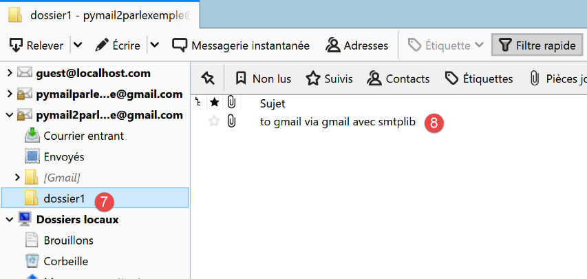
- em [7-8], movemos (com o rato) todos os ficheiros da pasta [Caixa de entrada] para a pasta [pasta1];
Agora, vamos aceder ao site do Gmail e iniciar sessão como o utilizador [pymail2parlexemple@gmail.com]:

- Em [2-3], a caixa de entrada está vazia;
- em [1], a pasta [folder1] que foi criada;

- em [4-6]: os e-mails que foram movidos para a pasta [pasta1];
Estamos agora a analisar a seguinte arquitetura:

- O Cliente A é a aplicação Thunderbird;
- O Cliente C é a aplicação web do Gmail;
- O servidor B é o servidor IMAP do Gmail;
A árvore de pastas do utilizador é mantida pelo servidor IMAP. Em seguida, todos os clientes IMAP sincronizam-se com ele para apresentar as pastas da conta do utilizador. Aqui, o Thunderbird enviou vários comandos para:
- criar a pasta [pasta1];
- mover mensagens para esta pasta;
21.7.2. script [imap/main]: cliente IMAP com o módulo [imaplib]

O script [imap/main] é configurado pelo seguinte script [imap/config]:
Comentários
- linhas 8–29: a chave [mailboxes] está associada à lista de caixas de correio a verificar;
- linha 20: o servidor IMAP;
- linha 21: a sua porta de serviço;
- linhas 22-23: o utilizador cujos e-mails pretende ler;
- linha 24: o número máximo de e-mails a recuperar;
- linha 25: indica se deve estabelecer uma ligação segura com o servidor IMAP (True) ou não (False);
- linha 26: o tempo máximo de espera por uma resposta do servidor;
- linha 27: pasta para guardar os e-mails lidos;
O script [imap/main] é o seguinte:
Comentários
- linhas 14-36: vemos a mesma abordagem utilizada no script |pop3/02/main|;
A função [readmails] é a seguinte:
Comentários
- linhas 7–15: recuperam as definições de configuração;
- linhas 19, 79: o código é controlado por um bloco try/finally. As exceções não são, portanto, capturadas (não há cláusula except), pelo que são passadas para o código de chamada, que as captura e as apresenta;
- linhas 23–30: criar a pasta para guardar e-mails;
- linhas 31–35: ligamo-nos ao servidor IMAP. A classe utilizada difere consoante se trate de um servidor IMAP seguro (IMAP4_SSL) ou não (IMAP4);
- linhas 36–38: Define o tempo limite de comunicação cliente/servidor;
- linhas 39–40: autenticar-se no servidor IMAP;
- linhas 41-42: vimos que a caixa de correio de um utilizador IMAP pode ser organizada em pastas. A pasta [INBOX] destina-se ao correio recebido. Para selecionar a pasta [folder1], escreveríamos [imapResource.select('folder1')];
- linhas 43-45: solicitamos a lista de todas as mensagens encontradas na [INBOX]:
- o primeiro parâmetro de [imapResource.search] é um tipo de codificação. [None] significa «sem filtro de codificação»;
- o segundo parâmetro é um critério. Existem diferentes formas de expressar isto. O critério [ALL] significa que queremos todas as mensagens na pasta;
O resultado de [imapResource.search] tem o seguinte aspeto:
typ=OK, data=[b'1 2']
[data] é uma lista que contém os números das mensagens recuperadas. Estes estão em binário. No exemplo acima, foram encontradas duas mensagens na pasta [INBOX];
- Linha 49: Recuperamos os IDs das mensagens. Acima, teremos a lista [b'1' b'2'], uma lista de números codificados em binário;
- Linhas 53–78: Fazemos um loop para ler as mensagens na pasta [INBOX];
- linhas 54-55: número da mensagem;
- linhas 58-59: a mensagem n.º [num] é solicitada ao servidor IMAP;
- o primeiro parâmetro é o número da mensagem pretendida;
- o segundo parâmetro é uma cadeia de caracteres "(parte1)(parte2)…", em que [parte] é o nome de uma parte da mensagem. Não analisei isto em detalhe. O nome (RFC822) refere-se ao e-mail na sua totalidade;
Recebemos algo no seguinte formato:
type=OK, data=[(b'1 (RFC822 {614}', b'Return-Path: guest@localhost\r\nReceived: from [127.0.0.1] (localhost [127.0.0.1])\r\n\tby DESKTOP-528I5CU with ESMTPA\r\n\t; Tue, 17 Mar 2020 09:41:50 +0100\r\nTo: guest@localhost\r\nFrom: "guest@localhost" <guest@localhost>\r\nSubject: test\r\nMessage-ID: <2572d0f0-5b7c-2c31-5a70-c628293d5709@localhost>\r\nDate: Tue, 17 Mar 2020 09:41:48 +0100\r\nUser-Agent: Mozilla/5.0 (Windows NT 10.0; WOW64; rv:68.0) Gecko/20100101\r\n Thunderbird/68.6.0\r\nMIME-Version: 1.0\r\nContent-Type: text/plain; charset=utf-8; format=flowed\r\nContent-Transfer-Encoding: 8bit\r\nContent-Language: fr\r\n\r\nh\xc3\xa9l\xc3\xa8ne est all\xc3\xa9e au march\xc3\xa9 acheter des l\xc3\xa9gumes.\r\n\r\n'), b')']
O elemento [data] aqui é uma lista com um elemento, e esse único elemento é uma tupla de três elementos:
data = [
(b'1 (RFC822 {614}',
b'Return-Path: guest@localhost\r\nReceived: from [127.0.0.1] (localhost [127.0.0.1])\r\n\tby DESKTOP-528I5CU with ESMTPA\r\n\t; Tue, 17 Mar 2020 09:41:50 +0100\r\nTo: guest@localhost\r\nFrom: "guest@localhost" <guest@localhost>\r\nSubject: test\r\nMessage-ID: <2572d0f0-5b7c-2c31-5a70-c628293d5709@localhost>\r\nDate: Tue, 17 Mar 2020 09:41:48 +0100\r\nUser-Agent: Mozilla/5.0 (Windows NT 10.0; WOW64; rv:68.0) Gecko/20100101\r\n Thunderbird/68.6.0\r\nMIME-Version: 1.0\r\nContent-Type: text/plain; charset=utf-8; format=flowed\r\nContent-Transfer-Encoding: 8bit\r\nContent-Language: fr\r\n\r\nh\xc3\xa9l\xc3\xa8ne est all\xc3\xa9e au march\xc3\xa9 acheter des l\xc3\xa9gumes.\r\n\r\n'),
b')'
]
O segundo elemento desta tupla é uma cadeia binária que representa a mensagem solicitada na íntegra. Podemos reconhecer os elementos acima já apresentados ao estudar o módulo [mail_parser].
data[0] representa uma tupla de dois elementos. data[0][1] representa as linhas da mensagem em formato binário.
- linha 68: a função [email.message_from_bytes(data2[0][1])] constrói um objeto do tipo [email.message.Message] a partir das linhas da mensagem. O tipo [email.message.Message] é o tipo do parâmetro do módulo [mail_parser] que escrevemos anteriormente;
- linhas 69–73: criamos a pasta de gravação para a mensagem #[num];
- linha 75: chamamos a função [save_message] do módulo [mail_parser] na linha 5. Esta função foi descrita na secção |pop3/02/main|;
- linhas 76–78: voltamos ao ciclo para processar a mensagem seguinte;
- linhas 79–84: independentemente de ter ocorrido um erro ou não:
- linha 82: fechamos a ligação à pasta consultada;
- linha 84: desligamo-nos do servidor IMAP;
Os resultados obtidos são idênticos aos obtidos com o script [pop3/02/main]. Isto é normal, uma vez que é utilizado o mesmo analisador de e-mail [mail_parser].